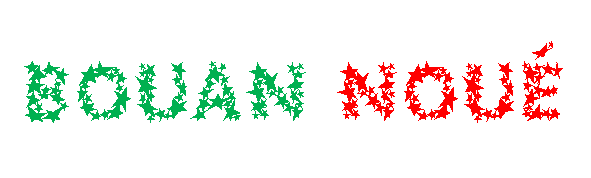

|
À travèrs les montangnes
À travèrs les montangnes
Et du d'sèrt i' veinnent,
Les Mages savants et sages
À sa pouôrre humbl'ye d'meuthe
D'eune ardeur dêvouée
Dé liain il' arrivent
Pour suivre sans tchestchion
Eune êtaile coumme dgide.
Là lus Rouai, lus Saûveux
Couochi, humbl'ye et doux,
Chutte veue tchi les amène
Tout du long d'lus viage,
Pouor êcliaithi tréjous
Les nâtions au liain,
Suivant lé c'mîn jouaiyeux
Condis par l'êtaile.
Té tchi dans eune êtabl'ye
Au monde arrivit,
tchi à ch'teu en glouaithe
Sus touos rouoyaumes règne,
Èrtchil'ye les pouôrres païens
Des pays lointains
Tchi n'ont janmais veu lithe
Ch't' êtaile sans pathelle.
En avant toute la niet,
Niet si seule et sombre,
Auve Ta sainte leunmiéthe
Lithant l'avant à ieux,
Mène-les, Juis et Païens,
Au r'pos êtèrnel,
Jannes et vièrs étout
Condis par T'n êtaile.

Anges des régions dé la glouaithe
Angels from the realms of glory
Anges des régions dé la glouaithe,
Passez par-'chîn à ces sé.
Ou racontez toute l'histouaithe
Comment not' Saûveux est né.
Gloria in excelsis Deo
Dans les clios i' y'a des bèrgers,
Châtchun gardant san troupé.
Dgieu ès hommes est v'nu d'meuther.
Adouothons chu saint bébé.
Gloria in excelsis Deo
Mages, laîssiz vos contemplâtions,
I' y'a dé pus grande importance.
Chèrchiz lé dési des nâtions.
L'êtaile annonche sa naîssance.
Gloria in excelsis Deo

O Arbre dé Noué
O Tannenbaum
O Arbre dé Noué! O Arbre dé Noué!
Tes fielles sont tréjous auve mé.
O Arbre dé Noué! O Arbre dé Noué!
Tes fielles sont tréjous auve mé.
I' sont belles et vèrtes en Êté
Et acouo quand i' tchait d'la né.
O Arbre dé Noué! O Arbre dé Noué!
Tes fielles sont tréjous auve mé.
O Arbre dé Noué! O Arbre dé Noué!
Tchi bonheu dans ta bieauté!
O Arbre dé Noué! O Arbre dé Noué!
Tchi bonheu dans ta bieauté!
Tu'es tréjous à nos faithe penser
À la niet quand Jésû fut né.
O Arbre dé Noué! O Arbre dé Noué!
Tchi bonheu dans ta bieauté!
O Arbre dé Noué! O Arbre dé Noué!
Ta forche est coumme San pouvé.
O Arbre dé Noué! O Arbre dé Noué!
Ta forche est coumme San pouvé.
Il enduthe à l'êtèrnité
Craîssant en amour et espé.
O Arbre dé Noué! O Arbre dé Noué!
Ta forche est coumme San pouvé.
Atout jouaie dans l'temps jadis.
As with gladness men of old
L's anciens tch'étaient rêvilyis
Vîdrent là lueu d'la belle êtaile
Tch'êcliaithait lé c'min du Ciel;
O Bouan Dgieu, donne-nous l'avis
Dé Té Siéthe toute nouotre vie.
Comme i' suivîdrent la lueu,
Tchi les m'nit jusqu'au Saint Lieu,
Ou'est tch'i' pûdrent lus agenouoilli,
Pour adouother l'Chièr Pétit
Tchi d'vînt pus tard le Sauveux.
Dé Toutes âmes souos les Cieux.
Il' apportîdrent des présents
Dé grand' valeu' et d'l'enchens;
Ch'est à nous dé siéthe lus pas,
Et d'nouos comporter 'chîn bas,
D'manniéthe a Lî présenter
Nouot' amour et nouot' respé
O chièr Jésûs, â châque jour,
Veil'yes sus nous avec amour,
Et à l'heuthe du drain soupi
Erchai-nous dans l'Paradis
Où'est tchi' n'y'a plieurs ni mînséthes,
Dans la glouaithe dé Tan Sanctuaithe.
Là, dans l'bonheu et la jouaie,
Matîn, méjeu, arlévée,
Dé Ta Présence, et des Anges,
J'pouôrrons T'offri nouos louanges
Et chanter l's allélûias
Auve lé Sanctus d'ichîn bas.
Amen.

Au bèr du saint êfant
Air: Cantique 114, Recueil de Cantiques Méthodiste, 1889
Lé monde afflioquent à Béthléhém;
l'aubèrge est plieine à Béthléhém;
j'n'éthons pon d'liet à Béthléhém;
pouor couochi l'saint êfant.
Mais y'a du run là dans l'êtabl'ye,
auve lé boeu et l'âne dans l'êtabl'ye
ichîn j'éthons caud dans l'êtabl'ye
j'y couoch'chons l'saint êfant.
Des troupieaux d'brébis ès côtis
paîssent bein paisibl'yes par les côtis;
i' bêent auve les anges ès côtis
en louangeant l'saint êfant.
Lé ciel est sablionné d'êtailes;
tout y'est êcliaithi par l's êtailes.
Y'en a tchi siêthent eune belle êtaile
pouor v'nîn au saint êfant.
Ch'est un long but à Béthléhém;
faîthons not' c'mîn à Béthléhém;
j'îthons bétôt à Béthléhém;
au bèr du saint êfant.
Aussi bein qu'les Trais Rouais
Ny Drogh Vraane
Quand Jésû 'tait un pétchiot
et né d'la Vièrge Mathie,
les preunmièrs tchi lé louangîtent
lî vîntent d'eune bèrgéthie.
Et lé-é chein tch'a des ouothelles
pouor ouï, véthe-dgia, qu'i' ouaie:
Jésû aimait les bèrgers
aussi bein qu'les Trais Rouais.
Quand Jésû 'tait tchèrpentchi,
atout clious et martchieaux
il apprannait san mêtchi
coumme les aut's sîmpl'yes hardgieaux.
I' chi-innait à tigue dé corps
sus bein dé buts dé bouais.
Jésû aimait san travas
aussi bein qu'les Trais Rouais.
Quand Jésû fut trisonné
et env'yé à sa mort,
né v'là tchi soûffraient auve li
deux voleurs, des deux bords.
Même su-us chu Mont à la Cranne
et clioué sus la crouaix,
ch'est qu'Jésû aimait l'voleux
aussi bein qu'les Trais Rouais.
Quand Jésû, ressuscité,
montit ès pus hauts lieux,
i' s'assiévit pouor jugi
là, au dêtre du Bouôn Dgieu.
Quand j'tchi-itt'tai chutte vie d'mînséthe,
jé s'sai heutheux, car j'crai
qué Jésû aime lé pécheux
aussi bein qu'les Trais Rouais.

Ayiz eune jouaiyeuse et bouonne Fête dé NouéHave yourself a merry little Christmas
Ayiz eune jouaiyeuse et bouonne Fête dé Noué;
rêjouiss'-ous tréjous;
d'chu moment
toutes nos gênes s'sont bein liain dé nous.
Ayiz eune jouaiyeuse et bouonne Fête dé Noué;
qu'la saîson r'sait dgaie;
d'chu moment
toutes nos gênes s'sont bein hortes la vaie.
Et nos r'v'chîn coumme au temps pâssé,
janmais lâssés d'êt' ensembl'ye,
coumme les anmîns bein près d'nos tchoeurs
et bein heutheurs lus rassembl'yent.
Châque année j'nos rassembliéthons tréjous,
s'lon lé d'si dé Dgieu.
M'ttez eune êtaile sus l'arb' coumme ou lit ès cieux,
et ayiz eune bein jouaiyeuse Fête dé Noué achteu.

Les bein bouonnes bêtes
The Friendly Beasts
Jésû, not' Saûveux, l'Jour dé Noué,
dans eune vielle êtabl'ye i' fut né
auve les bein bouonnes bêtes à l'èrgarder:
Jésû, not' Saûveux, l'Jour dé Noué.
Mé, dit l'ânon ès longues ouothelles,
j'portis sa méthe, Mathie la belle
souos l'caud solé epis l's êtailes,
mé, dit l'ânon ès longues ouothelles.
Mé, dit la vaque couleu dé myi,
j'lî baillis man tro pouor lé couochi
épis man fain pouor s'n ouothilyi,
mé, dit la vaque couleu dé myi.
Mé, dit la brébis ès cônes corlées,
j'lî baillis d'ma laine pouor san blianket,
d'la laine pouor l'enfliuber au liet,
mé, dit la brébis ès cônes corlées.
Mé, dit la colombe, blianche coumme la né,
j'fis coucouroux pouor lé bèrchoter,
j'fînmes coucouroux, ma douoche et mé,
mé, dit la colombe, blianche coumme la né.
Les bein bouonnes bêtes, bénites et belles,
racontent châtcheune sén alibèle:
coumme dans l'êtabl'ye si néthe et vielle,
il' atchilyîtent Emmanuel.
Jésû, not' Saûveux, i' fut né
dans eune êtabl'ye lé Jour dé Noué,
auve les bein bouonnes bêtes à l'entouother:
Jésû, not' Saûveux, i' fut né.
Des bèrgers gardaient lus troupieaux
While shepherds watched their flocks by night
Des bèrgers gardaient lus troupieaux,
Paisibliément assis,
Quand l'Ange du Seigneur décendit
Et la niet s'êcliaithit.
"I' n'faut pas craindre" I' lus dit,
"Ni vos troublier l's esprits,
Dé bouannes nouvelles jé vos apporte,
Pouor toute l'humannité"
"Pouor vous aniet à Bethléhem,
Un Saûveux vos est né;
Et chu Saûveux, ch'est Jésû Christ,
Et ch'en est 'chîn la preuve:
L'Êfant céleste ou trouv'thez
Ilà en veue d'tout l'monde,
Et bein pouôrrement enmailloté
Dans eune crèche à dormi."
Aussitôt dit, il appathut
Dans l'ciel des anges brillants,
Qui louangeaient l'Bouan Dgieu jouaiyeusement,
En chantant auve ches mots:
"Glouaithe au Bouan Dgieu dans les lieux hauts.
Et paix sainte sus la tèrre;
Bouanne volanté envèrs les hoummes
D'achteu à tout janmais!"
Bethléhem
Mary's Boy Child
À Bethléhem, ville dé Judée,
Il est dit dans la Bibl'ye,
Jésû Christ, lé fis dé Dgieu,
Fut né lé jour dé Noué.
Êcoutez les anges tchi chantent
L'histouaithe pouor té et mé:
I' disent qu'aniet lé fis d'Mathie
À Bethléhem est né!
Joseph, Mathie et la p'tite âne
Trouvîtent eune vielle êtabl'ye.
Ch'tait là qu'lé p'tit Jésû fut né,
L'Êfant si adouothabl'ye.
Êcoutez les anges tchi chantent
L'histouaithe pouor té et mé:
I' disent qu'aniet lé fis d'Mathie
À Bethléhem est né!
Les bèrgers dans l'côti couochis
Vîtent la brillante êtaile,
Et ouïtent lé chant tchi v'nait d'en haut
Lus dithe les bouonnes nouvelles.
Êcoutez les anges tchi chantent
L'histouaithe pouor té et mé:
I' disent qu'aniet lé fis d'Mathie
À Bethléhem est né!
Les Trais Sages Hommes et les bèrgers
S'en fûtent l'Êfant trouver;
Et dans l'êtabl'ye, sus l'fain couochi,
Lé p'tit Jésû dormait.
Êcoutez les anges tchi chantent
L'histouaithe pouor té et mé:
I' disent qu'aniet lé fis d'Mathie
À Bethléhem est né!
Sonnez les clioches, chantez en glouaithe,
Not' nouvieau Rouai est né,
Et l'homme viv'tha êtèrnellement
À cause du jour dé Noué!
Êcoutez les anges tchi chantent
L'histouaithe pouor té et mé:
I' disent qu'aniet lé fis d'Mathie
À Bethléhem est né!
Béthléhem
Vèrsion d'un cantique Dgèrnésiais d'D.O. Heaume "Bethlehem"
À Béthléhem, ville dé Judée,
il est dit dans la Bibl'ye
qué Jésû Chri lé fis dé Dgieu
fut né lé Jour dé Noué.
Êcoutez don les anges tchi chantent,
êcoutez à lus m'sage:
i' dithent qu'aniet
l'fis dé Mathie
s'sa né à Béthléhem.
Joseph, Mathie, et la p'tite âne,
traichîdrent éyou s'couochi.
Dans l'êtabl'ye i' trouvîdrent eune tâne
pouor Jésû dans l'râclyi.
Êcoutez don les anges tchi chantent,
êcoutez à lus m'sage:
i' dithent qu'aniet
l'fis dé Mathie
s'sa né à Béthléhem.
Les bèrgers, dans les clios couochis,
vîdrent l'êtaile si brillante
et ouîdrent lé chant tchi v'nait du ciel
lus dithe les bouonnes nouvelles.
Êcoutez don les anges tchi chantent,
êcoutez à lus m'sage:
i' dithent qu'aniet
l'fis dé Mathie
s'sa né à Béthléhem.
Les trais sages hoummes et les bèrgers
s'en fûdrent à Béthléhem,
et dans l'êtabl'ye sus l'fain couochi
lé p'tit Jésû dormait.
Êcoutez don les anges tchi chantent,
êcoutez à lus m'sage:
i' dithent qu'aniet
l'fis dé Mathie
s'sa né à Béthléhem.
Sonnez les clioches, chantez en glouaithe:
not' nouvieau rouai est né,
et l'houmme vivtha êtèrnellement
à cause du Jour dé Noué.
Êcoutez don les anges tchi chantent,
êcoutez à lus m'sage:
i' dithent qu'aniet
l'fis dé Mathie
s'sa né à Béthléhem.
Béthléhem
Air: Cantique 172, Recueil de Cantiques Méthodiste, 1889
Béthléhem,
Béthléhem,
pétite ville dé Béthléhem!
Tu'as atchilyi un p'tit êtrangi
auve ses pathents tréjous louangi;
dans la nièrcheu l'êtaile lit.
Béthléhem,
Béthléhem,
Béthléhem.
P'pèe Joseph,
P'pèe Joseph,
Bouôn tchèrpentchi, P'pèe Joseph!
Eune vièrge donn'na naîssance à un fis.
N'ai pon d'peux, Joseph, fis d'Dâvi!
Tout s'sa coumme lé Seigneu dit.
P'pèe Joseph,
P'pèe Joseph,
P'pèe Joseph.
M'mèe Mathie,
M'mèe Mathie,
méthe du Bouôn Dgieu, M'mèe Mathie!
Tu'es favorisée et tu'es bénie!
Auve lé pouvé du Saint Esprit
qué la chose sait accomplyie.
M'mèe Mathie,
M'mèe Mathie,
M'mèe Mathie.
P'tit Jésû,
P'tit Jésû,
né pouor nous, lé p'tit Jésû!
Bèrchi dans l'êtabl'ye auve l'âne et l'boeu,
un p'tit êfant tch'est lé Bouôn Dgieu.
Dans la chai viyiz l'Saûveux!
P'tit Jésû,
P'tit Jésû,
P'tit Jésû.
Béthléhem,
Béthléhem,
pétite ville dé Béthléhem!
Tu'as atchilyi un p'tit êtrangi
auve ses pathents tréjous louangi;
dans la nièrcheu l'êtaile lit.
Béthléhem,
Béthléhem,
Béthléhem.
Béthléhem chante à ces sé
Air: Cantique 95, Recueil de Cantiques Méthodiste, 1889
Ouai lé bêlement d'brébis sus les côtis!
Ouai lé chant des anges ès cieux!
Coumme les anges et angnieaux sont à louangi:
"Glouaithe à Dgieu ès pus hauts lieux!"
D'eune vouaix d'ange et d'eune vouaix d'angné
Béthléhem lî chante à ces sé.
Ouai la rêponse des gardeurs dé brébis!
Ouai lus êcatchîn jouaiyeux!
Sié les gardeurs d'brébis dé d'dans les clios!
Sié lus pas avaû les c'mîns!
Coumme il' apportent un angné sus lus dos,
y'a un angné tch'est à v'nîn.
D'eune vouaix d'ange et d'eune vouaix d'angné
Béthléhem lî chante à ces sé.
Sié-les jusqu'ès bords du bèr au moussetchot!
Sié-lé tréjous à l'av'nîn!
Vai la ville où'est qu'lé saint p'tchiot est bèrchi!
Vai l'êtabl'ye où'est qu'i' fut né!
Coumme l'âne et l'boeu sont à lus agenouoilli,
il est v'nu pouor nos saûver.
D'eune vouaix d'ange et d'eune vouaix d'angné
Béthléhem lî chante à ces sé.
Vai-lé acanté Joseph et Mathie!
Vai not' Saûveux, not' espé!
Sai heutheux en apportant tes présents!
Sai fidèle et génétheux
Coumme les rouais auve la myrrhe, l'or et l'enchens,
offre-lî tréjous du miyeu!
D'eune vouaix d'ange et d'eune vouaix d'angné
Béthléhem lî chante à ces sé.
Sai tréjous not' trésor, oh saint êfant!
Sai tréjous siez nous dans l'tchoeu!

Un bieau blianc Noué
White Christmas
Mé j'voudrais vaie un bieau blianc Noué
coumme les cheins à tchi qu'j'ai rêvé
auve des bouais aube-gélés et des mousses au dget
pouor ouï des clioches dans la né.
Mé j'voudrais vaie un bieau blianc Noué
coumme sus les cartes dé Noué qu'j'êcris
Qu'tes jours saient tréjous êcliaithis
et qué siez té châque Noué sait blianchi

Bouanne Fête dé Noué!
Air: Cantique 146, Recueil de Cantiques Méthodiste, 1889
Bouanne Fête dé Noué!
Châque chandelle êcliaithe siez châtchun san tchoeu.
Viyiz la veue, l'êtînchelle et lé feu!
Tout r'lit atout l'amour dé Dgieu;
tout chante acanté les anges ès cieux:
Bouanne Fête dé Noué! Bouanne Fête dé Noué!
À Béthléhem,
y'a un p'tit êfant à dormi dans l'tro;
y'a des gardeurs dé brébis dans les clios.
Viyiz les présents d's avisés!
Tout est changi d'pis qu'chu p'tchiot fut né
à Béthléhem, à Béthléhem.
Dors, p'tit êfant!
Bèrchi dans l'êtabl'ye acanté les bêtes,
qu'i' n'y'ait pon d'brit pouor té badrer la tête.
Taîs'-ous! Qu'i' n'y'ait d'aut' dé hèrtchîn.
Séyiz trantchil'yes siez l'dormeux divîn!
Dors, p'tit êfant! Dors, p'tit êfant!

Lé Cantique des Annimaux
Air: Cantique 67 (tchoeu), Recueil de Cantiques Méthodiste, 1889
Dans l'êtabl'ye, l'âne et l'boeu
braient lus cantique dé jouaie.
Lé v'là lé p'tchiot achteu;
les annimaux lé vaient.
Lé j'va hale lé hèrnais
à fain pour faithe san liet
pouor qu'il y dorme en paix
siez l's annimaux à Noué.
L'angné et la brébis
vil'yent sus chu saint êfant.
Lus bêlement va l'bèrchi
si douochement, si douochement.
Ronne, colombe; tuite, marté!
Racontez la mèrvelle!
Lé cahouain dans la niet
la crie jusqu'ès êtailes.
La bête à saie, ou honne
dans l'êtabl'ye où'est qu'i' s'tâne.
Ch'est l'salut qu'i' nos donne
acanté l'boeu et l'âne.

Lé Cantique des Brandons
Torches
Brandons, brandons, auve nos brandons
couothons vaie lé p'tchiot dans l'tro.
Christ est né, et j'l'adouoth'thons.
Couothons lî chanter lô-lô.
Ah, lô-lô, lô-lô, chièr pétit.
Ah, lô-lô, lô-lô, man p'tchiot.
Dors en paix où'est qu'châque brandon lit
quandi qu'jé t'chantons lô-lô.
Chantons, m's anmîns, séyons rêjouis:
jouaie et leunmiéthe tréjous.
Nos brandons sont à êcliaithi
l'êfant tch'a 'té né pouor nous.
Lé Cantique du Coucou
Eune vèrsion Jèrriaise du cantique dé Noué Tchèque "Zezulka"
Lé coucou volit hors d'la bouaîs'sie
Coucou!
jusqu'au bèr où'est qu'l'êfant 'tait pliaichi
Coucou!
chantant san cantique dé bonheu
lé coucou loûsit san Seigneu:
Coucou, coucou, coucou!
La colombe jutchie là-haut sus l'faît
Ronron!
s'êcantit dêliêment à ronner
Ronron!
Oulle avait tant d'ordgi et d'jouaie
d'saver qu'lé p'tit Jésû 'tait né:
Ronron, ronron, ronron!
La teurtéthelle à l'êtabl'ye volit
Coucouroue!
au bèr à Jésû pouor l'atchilyi
Coucouroue!
du fond d'sa fale, du fond d'san tchoeu
ou chantit au p'tchiot tch'est l'Saûveux:
Coucouroue, coucouroue, coucouroue!

Lé Cantique dé Coventré
(sus l'air dé "The Coventry Carol")
Lô-lô, lô-lô, dors ilo pétit p'tchiot
Lô-lô, lô-lô, lô-lô
Lô-lô, man p'tit p'tchiot
Lô-lô, lô-lô, lô-lô
Mes soeurs, comme tchi bein l'protégi
achteu contré tout dro?
Qu'chu pouôrre êfant ouaie bein not' chant:
Lô-lô, lô-lô, lô-lô
Hérode lé rouai sans drouait ni paix
a c'mandé à ces sé
à ses soudards dé faithe lus part:
touos les p'tchiots machacrer.
J'ai-t-i' pitchi pouor té, man p'tit,
et j'en plieuth'thai acouo!
J'né t'lâqu'thai pon sans chutte chanson:
Lô-lô, lô-lô, lô-lô
Lô-lô, lô-lô, dors ilo pétit p'tchiot
Lô-lô, lô-lô, lô-lô
Lô-lô, man p'tit p'tchiot
Lô-lô, lô-lô, lô-lô
Lé Cantique du Pommyi
Air: Cantique 99, Recueil de Cantiques Méthodiste, 1889
Dans l'gardîn y'a un pommyi;
dé tchi j'tchilyons les frits.
Mathie nos donnit un fis;
san nom est Jésû Chri.
Dans l'gardîn y'a un pommyi;
san frit est dans l'preinseu.
Mathie nos donnit un fis;
tch'est not' chièr p'tit Saûveux.
Dans l'gardîn y'a un pommyi;
bév'tonnons un lèrmîn.
Mathie nos donnit un fis;
tchi touônnit l'ieau en vîn.
Dans l'gardîn y'a un pommyi;
lé mar est êglianmi.
Mathie nos donnit un fis;
et pouor nous i' sangnit.
Dans l'gardîn y'a un pommyi;
san cidre a du pitchet.
Mathie nos donnit un fis;
pouor qu'san sang fûsse vèrsé.
Dans l'gardîn y'a un pommyi;
lé pus bé d'touos les bouais.
Mathie nos donnit un fis;
qu'nou cliouit à la crouaix.
Dans l'gardîn y'a un pommyi;
san frit est bouôn et bé.
Mathie nos donnit un fis;
tchi des morts fut souôl'vé.
Dans l'gardîn y'a un pommyi;
dé tchi l'doux cidre nou bait.
Mathie nos donnit un fis;
tch'est not' Seigneu et Rouai.
Dans l'gardîn y'a un pommyi;
à Noué ses branques sont nues.
Mathie nos donnit un fis;
tchi fait flieuthi l'salut.
Dans l'gardîn y'a un pommyi;
vèrsons-lî eune vèrrée.
Mathie nos donnit un fis;
j'vos souhaitons un Bouôn Noué.

Cantique dé la Sèrvelle dé Noué
(sus l'air dé "Hills of the North rejoice")
Né v'chîn les fêtes tchi r'veinnent;
lé Saint P'tchiot r'est ichîn.
Cârr'-ous d'pits et d'fontaines
dé tchi l'ieau touônnent en vîn.
Ch'est la niet quand tout s'sa changi:
lé Salut veindra auve lé Fis.
Les clioches dé Noué clyîncâlent:
ch'est l'apprèche dé mînniet.
V'là les vaques dans lus stâles
à g'nouors pouor l'adouother.
Ch'est la niet quand tout s'sa changi:
lé Salut veindra auve lé Fis.
Pliaichiz du housse à haut;
ch'est d'pather not' siez-nous
pouor pliaithe ès p'tits faîtchieaux
et à tout l'monde étout.
Ch'est la niet quand tout s'sa changi:
lé Salut veindra auve lé Fis.
Lé Cantique du Sussex
The Sussex Carol (On Christmas Night all Christians sing...)
Lés Chrétiens chantent chutte séthée d'Noué,
Pour ouï ches nouvelles dé grande jouaie.
Lés Chrétiens chantent chutte séthée d'Noué,
Pour ouï ches nouvelles dé grande jouaie.
Dans les cieux appathaîssent des anges,
Chantant, èrpétant lus louanges.
Et pourtchi qué j'devthons êt' triste,
Quand j'fêtons la naîssance du Christ?
Et pourtchi qué j'devthons êt' triste,
Quand j'fêtons la naîssance du Christ?
Quand not' Saûveux a libéthé
Les hommes d'la prison dé pêché.
La lueu nos a illeunminnés
Et fit chanter les anges chutte niet,
La lueu nos a illeunminnés
Et fit chanter les anges chutte niet,
"Glouaithe céleste et paix humaine
Achteu et pour tréjous. Amen."
Sa Grâce a chassé lé pêché,
Donnant la Vie et la Santé.
Sa Grâce a chassé lé pêché,
Donnant la Vie et la Santé.
Hommes et Anges, chantez auve jouaie,
Pour saluer lé nouvieau rouai!
Lé Cantique du Tchoeuryi
The Cherry Tree Carol
Maît' Joseph 'tait un bouôn vyi,
un vyi bouon à mathier,
quand i' s'mathyit à Mathie
du pays d'Galilée.
Joseph et Mathie pâssaient
par un gardîn à frit
dé tchi les tchoeurièrs portaient
des tchoeurs comme eune sangnie.
Mathie en eut un affit
et dit bein tchoeuthûment:
"Tchil'ye-mé un tchoeur, chièr Joseph,
pouor mé et mén êfant."
Là-d'ssus Joseph vînt mârri,
et dit dans un grand d'so:
"Qué ch'tî-chîn louoche lé tchoeuryi
tch'a 'té l'péthe à tan p'tchiot!"
Épis l'êfant s'êcatchit
dans la bielle à sa méthe:
"Baîsse tes branques, arb', pouor Mathie;
Joseph n'en étha dgéthe."
Lé pus haut tchoeuryi s'baîssit;
Mathie tchilyit des tchoeurs,
des tchoeurs rouoges comme eune sangnie
d'un corps morté tchi meurt.
Mange tes rouoges tchoeurs, don, Mathie.
Joseph, né fai pon d'teurs:
l'êfant tchi c'mande un tchoeuryi,
quémand'da touos nos tchoeurs.

Lé Cantique du Vièr Noué
Air: Cantique 186, Recueil de Cantiques Méthodiste, 1889
Aniet ch'èrest lé six d'Janvyi:
un Bouan Vièr Noué!
J'avons bu et j'avons mangi:
tchi Bouan Vièr Noué!
Dansons et faîthons rêvillon,
l'Hivé n'duthe pon trop long.
L'année tchi c'menche s'sa remplyie d'ji:
un Bouan Vièr Noué!
Aniet ch'est Noué au mais d'Janvyi:
chu Bouan Vièr Noué!
Not chaûdé est bein êpici
au Bouan Vièr Noué!
La saîson d'Noué veindra à fîn,
doux comme du chucre scandîn.
J'éthons d'la gâche et acouo d'tchi:
un Bouan Vièr Noué!
L'vez vos vèrres à Noué en Janvyi:
au Bouan Vièr Noué!
À la santé d'la compangnie:
un Bouan Vièr Noué!
Dé tchi bein fait est fait deux fais;
et j'èrfêtons chu mais.
Au Nouvel An, not' Noué est vyi:
un Bouan Vièr Noué!
Ch'est la Sèrvelle dé Noué!
The Lord at first had Adam made
Lé Bouôn Dgieu griyit l'vièr Âdam,
au c'menchement, du ponsi.
I' l'înspithit en soûffliant d'dans
auve lé soûffl'ye dé la vie.
Et lé Seigneu fit pouor ch't houmme-chîn
eune d'meuthe au Paradis,
pouor souongni les flieurs d'san gardîn,
en êt' lé gardîngni.
Chantez des louanges à not' Saûveux
d'pis l'êfant nos fut né.
Rêjouiss'-ous don! Séyiz heutheurs!
Ch'est la Sèrvelle dé Noué!
Et Êve et Âdam y d'meuthaient
et s'mîndrent à travailli.
À seule fîn d'les garder en paix,
ainchîn l'Bouôn Dgieu lus dit:
"Mangiz-en tout excepté l'frit
tchi craît sus chu grand bouais.
Lé chein tch'en mange s'en va mouothi,
condamné à janmais."
Chantez des louanges à not' Saûveux
d'pis l'êfant nos fut né.
Rêjouiss'-ous don! Séyiz heutheurs!
Ch'est la Sèrvelle dé Noué!
Lé Bouôn Dgieu aime l'humannité.
Né v'là l'mithacl'ye qu'i' fit:
ès d'cendants d'Âdam êdgéthés,
i' mouontrit san pitchi.
À seule fîn dé nos racater
dé chu Malîn Esprit,
et pouor l'amour dé nos saûver,
i' nos env'yit san Fis.
Chantez des louanges à not' Saûveux
d'pis l'êfant nos fut né.
Rêjouiss'-ous don! Séyiz heutheurs!
Ch'est la Sèrvelle dé Noué!
Et achteu ch'est la sainte saîson
dans tchi not' Saûveux vînt.
Séyons heutheurs, et fricotons
auve des gâches et podîns.
Pliaingnons les pouôrres et affanmés,
baillons-lus à mangi,
et si j'l'avons bein méthité,
j'veindrons au Paradis.
Chantez des louanges à not' Saûveux
d'pis l'êfant nos fut né.
Rêjouiss'-ous don! Séyiz heutheurs!
Ch'est la Sèrvelle dé Noué!
La Chanson d'Noué (Y'a des mârrons à rôti sus l'feu)
The Christmas Song (Chestnuts roasting on an open fire)
Y'a des mârrons à rôti sus l'feu
l'ouaîsé à rouoge bé est d'houors
y'a des cantiques chantés par un tchoeu
et l'monde sont abriés d'amors
Tout l'monde sait qu'un picot et du dgi
font la saîson jouaiyeuse et cliaithe
et ches p'tchiots tch'ont l's ièrs bein rêvilyis
à ces sé n's'endormithont dgéthe
I' savent qu'i' veindra, Papa Noué
il a chèrgi un tas d'jouettes sus san traîné
et châque pétchiot s'en va rester au dget
pouor vaie si les chèrs pouor lé vrai peuvent voler
Don j'vos propose chu sîmpl'ye pétit souhait
ès mousses, ès vièrs et à tous
Ouaithe qu'nou l'ait dit partout l'monde bein des fais
un raide Bouan Noué à vous
Don j'vos propose chu sîmpl'ye pétit souhait
ès mousses, ès vièrs et à tous
Ouaithe qu'nou l'ait dit partout l'monde bein des fais
un raide Bouan Noué
un raide Bouan Noué
un raide Bouan Noué à vous
Les clioches dé Noué
Air: Cantique 29, Recueil de Cantiques Méthodiste, 1889
Les clioches à ces sé
lus en vont sonner
auve lé boeu bueûler
et l'âne braithe qué d'pus bé:
Un p'tchiot a 'té né
et dans l'tro êtrav'lé.
Ouïyiz les clioches dé Noué à sonner à ces sé!
Les clioches à ces sé
lus en vont sonner.
Des anges d'valent des cieux
pouor louangi lé Bouôn Dgieu,
et en tchoeu chanter
par lé ciel êtailé.
Ouïyiz les clioches dé Noué à sonner à ces sé!
Les clioches à ces sé
lus en vont sonner.
Des gardeurs d'brébis
gabathent des fraids côtis
auve un p'tit angné,
un p'tit angné tchi bée.
Ouïyiz les clioches dé Noué à sonner à ces sé!
Les clioches à ces sé
lus en vont sonner.
Des hommes avisés
ont dé tchi à donner -
des bein riches présents:
la myrrhe, l'or et l'enchens.
Ouïyiz les clioches dé Noué à sonner à ces sé!
Les clioches à ces sé
lus en vont sonner.
Rêjouiss'-ous tous don!
Et auve du rêvillon
atchilyiz l'avé
tch'est v'nu pouor nos saûver!
Ouïyiz les clioches dé Noué à sonner à ces sé!
Clyînclias! Clyînclias! Clyînclias!
Air: Cantique 1, Recueil de Cantiques Méthodiste, 1889
Clyînclias! Clyînclias! Clyînclias!
Les bouonnes clioches sonnent ichîn bas!
Clyînclias! Clyînclias! Clyînclias!
Des tchoeurs d'anges ès vouaix d'méta!
Les clioches ont annonchi
qué not' Saûveux est né
souos eune êtaile tchi lit.
Êcoutons les clioches dé Noué:
Clyînclias! Clyînclias! Clyînclias!
Les bouonnes clioches sonnent ichîn bas!
Clyînclias! Clyînclias! Clyînclias!
Des tchoeurs d'anges ès vouaix d'méta!
Jésû est dans san bèr;
des cliochettes à l'bèrchi.
Lé camas des cliochièrs
tressonne pouor nos rêvilyi:
Clyînclias! Clyînclias! Clyînclias!
Les bouonnes clioches sonnent ichîn bas!
Clyînclias! Clyînclias! Clyînclias!
Des tchoeurs d'anges ès vouaix d'méta!
Ès bouôns gardeurs d'brébis,
à l'angné dans lus bras,
auve un amas d'sonn'nie
les anges chantent lus hôsanna:
Clyînclias! Clyînclias! Clyînclias!
Les bouonnes clioches sonnent ichîn bas!
Clyînclias! Clyînclias! Clyînclias!
Des tchoeurs d'anges ès vouaix d'méta!
Les clioches sonnent auve d'la jouaie
et font rêjoui les cieux,
l'êtaile et les Trais Rouais,
les chanmeaux, et l'âne et l'boeu.
Clyînclias! Clyînclias! Clyînclias!
Les bouonnes clioches sonnent ichîn bas!
Clyînclias! Clyînclias! Clyînclias!
Des tchoeurs d'anges ès vouaix d'méta!
Y'étha du cârillon
d'ilo ès pus hauts lieux.
Nou-s'en ouait lé tresson
des grandes clioches tchi r'sonnent achteu:
Clyînclias! Clyînclias! Clyînclias!
Les bouonnes clioches sonnent ichîn bas!
Clyînclias! Clyînclias! Clyînclias!
Des tchoeurs d'anges ès vouaix d'méta!
Ch'est eune journée dé ji -
j'ouïyons cârillonner
partout lé monde entchi
les cliochettes du jour dé Noué:
Clyînclias! Clyînclias! Clyînclias!
Les bouonnes clioches sonnent ichîn bas!
Clyînclias! Clyînclias! Clyînclias!
Des tchoeurs d'anges ès vouaix d'méta!
Clyînclias! Clyînclias! Clyînclias!
Tchoeurs d'anges ès vouaix d'méta!
Clyînclias! Clyînclias! Clyînclias!
Les bouonnes clioches sonnent ichîn bas!
Couochi dans eune êtabl'ye
Away in a manger
Couochi dans eune êtabl'ye, sans bèr et sans liet,
lé p'tit Seigneu Jésû est là à haûter;
les êtailes êcliaithies seurvil'yent lé saint p'tchiot,
lé p'tit Seigneu Jésû à dormi dans l'tro.
Les vaques sont à bueûler - i' r'est rêvilyi;
mais chu bouôn p'tit Jésû n'est pon pouor piailli.
J't'aime bein, Seigneu Jésû: seurvil'ye-mé des cieux
et reste auprès d'man bèr jusqu'à sinne dé jeu.
Vé-t-en, Seigneu Jésû, reste acanté mé;
sai tréjous à m'dgetter, tréjous à m'aimer.
Aime touos les p'tits êfants qu'nou-s'est à bèrchi,
et reste auprès d'nos lyits jusqu'au drein soupi.
Craûle douochement, bèr
Air: Cantique 185, Recueil de Cantiques Méthodiste, 1889
Craûle douochement, bèr:
lé saint p'tchiot s'est accliâssé.
Craûle douochement, bèr:
i' sauv'tha touos l's avièrs.
Craûle douochement, bèr:
au son des cantiques dé Noué,
les bouais lus vèrquent ès côtis à ces sé.
Vente douochement, vent:
un mithacl'ye est à s'pâsser.
Vente douochement, vent:
qu'i' sait au lis, ch't êfant.
Vente douochement, vent:
qu'la bouonne nouvelle sait soûffliée
qu'les brébis bêent ès côtis à ces sé.
Caûffe douochement, feu:
lé p'tit êfant est lâssé.
Caûffe douochement, feu:
acanté l'âne et l'boeu.
Caûffe douochement, feu:
coumme tes fliambes êcliaithent la niet,
les êtailes lithent ès côtis à ces sé.
Tchai douochement, né:
les bonds d'né y sont tâssés.
Tchai douochement, né:
né v'chîn l's hoummes avisés.
Tchai douochement, né:
un tas d'présents sont donnés
au mousse tch'a 'té né pouor nous à ces sé.
Chante douochement, tchoeu:
né rêvilyiz pon l'avé.
Chante douochement, tchoeu:
étout ès pus hauts lieux.
Chante douochement, tchoeu:
"Paix sus la tèrre" sait chantée
par lé tchoeu d'anges ès côtis à ces sé.
Dans la Cité du Rouai Dâvi
Once in Royal David's City
Dans la Cité du Rouai Dâvi,
Sé trouvait eune vielle êtabl'ye:
Ou'est qu'eune méthe posit san p'tit êfant
Dans eune crêche à rempliaichi san liet.
Mathie Sainte, Méthe bénie
Et san fis, ch'est Jésû Christ.
I' vînt du ciel sus la tèrre,
Dgieu li-même, lé Tout-Puissant.
Decendit dans eune êtabl'ye,
Et san bèr n'était qu'eune stâlle.
Auve les pauvres - les humbl'yes d'esprit;
S'trouvait nouot' Saûveux Jésû Christ.
Dé nos ièrs enfîn jé l'vèrrons,
Grâce à sén îmmense amour.
Car ch't êfant si tendre et si doux,
Ch'est nouot' Seigneu, nouot' Sécours.
Touos ses êfants lé siéthont
Et au ciel il' arriv'thont.
Pas dans eune êtabl'ye pauvre
Auve les bestchiaux alentou d'li,
Jé lé vèrrons, mais en glouaithe
Assis à la drouaite dé Dgi,
Quand, couronnés, touos en blianc,
Ses êfants s'assembliéthont.
Dans la vielle ville du Rouai Dâvi
Air: Cantique 73, Recueil de Cantiques Méthodiste, 1889
Ouïyons auve les gardeurs d'brébis
les cantiques des anges ès cieux!
Allons, acanté ieux, vilyi
sus l'êfant tch'est l'Fis dé Dgieu!
Dans la vielle ville du Rouai Dâvi
y'a eune lueu tch'êcliaithe la niet;
eune êtînchelle dé fouai satchie
dans not' tchoeu, chutte séthée d'Noué.
Viyons endormi dans l'fêtu,
êcliaithi par eune sainte lueu,
né dans l'êtabl'ye, lé p'tit Jésû
tch'est bèrchi siez l'âne et l'boeu.
Dans la vielle ville du Rouai Dâvi
y'a eune lueu tch'êcliaithe la niet;
eune êtînchelle dé fouai satchie
dans not' tchoeu, chutte séthée d'Noué.
Les Trais Mages ont r'mèrtchi l'êtaile;
i' l'ont r'connu, i' l'ont sieu.
Séyons sages et tréjous fidèles,
siêthant l'êtaile au Saûveux!
Dans la vielle ville du Rouai Dâvi
y'a eune lueu tch'êcliaithe la niet;
eune êtînchelle dé fouai satchie
dans not' tchoeu, chutte séthée d'Noué.
Jour dé paix et d'célébrâtion,
jour dé jouaie et dé bonheu!
Lé Bouôn Dgieu êcliaithe les nâtions,
et j'viyons not' Rédempteu!
Dans la vielle ville du Rouai Dâvi
y'a eune lueu tch'êcliaithe la niet;
eune êtînchelle dé fouai satchie
dans not' tchoeu, chutte séthée d'Noué.
Dansons lé tou dé l'arb' dé Noué
Rockin' around the Christmas tree
Dansons lé tou dé l'arb' dé Noué
et j'éthons eune bouonne séthée.
Viy'-ous où'est qu'lé dgi est croch'té;
châque coupl'ye est pouor s'y'arrêter.
Dansons lé tou dé l'arb' dé Noué;
l'esprit d'Noué est mangnifique.
Pus tard jé mang'geons du pâté
épis chant'tons des cantiques.
Ous éthez un sentiment bein jouaiyeux en ouïyant
d'la chant'tie en excitâtion:
“Prans du housse pouor décorâtion”
Dansons lé tou dé l'arb' dé Noué;
qué tout l'monde lèvent lé dgéthet.
Lé monde lus rêjouissent à danser
dèrché comme au temps pâssé.
Donne-mé man Noué aniet
sus l'air dé Noël Nouvelet
Noué! Noué! Man Noué, man Noué!
Man Noué, s'i' vos pliaît!
Man Noué! Donne un morcé
d'gâche sus l'but dé l'ais!
Noué! Noué! Man Noué!
Donne-mé man Noué aniet:
eune modgie dé chaûdé
et eune gâche fouôrrée.
Noué! Noué! Man Noué, man Noué!
Man Noué, s'i' vos pliaît!
Man Noué! Donne un morcé
d'gâche sus l'but dé l'ais!
Noué! Noué! Man Noué!
Donne-mé man Noué aniet:
un gobîn dé pâté
et eune bouonne vèrrée.
Noué! Noué! Man Noué, man Noué!
Man Noué, s'i' vos pliaît!
Man Noué! Donne un morcé
d'gâche sus l'but dé l'ais!
Noué! Noué! Man Noué!
Donne-mé man Noué aniet:
eune paithe dé Chaûmonté,
eune pomme dé Choutchet.
Dors saint êfant
Air: Cantique 69, Recueil de Cantiques Méthodiste, 1889
Les gardeurs vil'yent sus lus brébis;
et l's êtailes lithent sus les clios.
Eune méthe èrgarde san p'tit êfant;
et l'péthe graie san liet dans l'tro.
Dors saint êfant;
dors trantchil'yement
dans tan bèr siez l'âne et l'boeu.
Dors p'tit Jésû;
tu'es not' salut:
Not' angné s'sa not' gardeux.
Les gardeurs ouaient sus les montangnes
un tchoeu chantant dans les cieux
d'un mousse né dans eune pouôrre êtabl'ye:
lé p'tchiot tch'est lé Fis dé Dgieu.
Dors saint êfant;
dors trantchil'yement
dans tan bèr siez l'âne et l'boeu.
Dors p'tit Jésû;
tu'es not' salut:
Not' angné s'sa not' gardeux.
Les gardeurs, laîssant lus troupieaux,
d'valant la raide caramiéthe
lus agenouôlent l'avant à l'êfant,
êcliaithis par sa sainte glouaithe.
Dors saint êfant;
dors trantchil'yement
dans tan bèr siez l'âne et l'boeu.
Dors p'tit Jésû;
tu'es not' salut:
Not' angné s'sa not' gardeux.
Les gardeurs, rêjouis d'la mèrvelle,
ont siévi les vouaix ès anges.
Chantons étout au p'tit Saûveux,
lé bèrchant atout nos louanges.
Dors saint êfant;
dors trantchil'yement
dans tan bèr siez l'âne et l'boeu.
Dors p'tit Jésû;
tu'es not' salut:
Not' angné s'sa not' gardeux.

Drélîndgettes
Silver bells
Les rues pavées,
des rues à vaie
pouor la Fête habilyies:
à banon
y'a un esprit
d'un Bouan Noué.
Les mousses à rithe,
les gens arrivent
auve les tchoeurs bein rêjouis;
à la carre
dé châque quémîn
nou ouait:
Drélîndgettes et cliochettes:
la Fête dé Noué à Saint Hélyi.
Clioches d'argent, tchîncaillant:
bétôt ché s'sa l'Jour dé Noué.
Des veues d'affi,
les veues d'trafi
blyîntchant rouoge, or, et vèrt
coumme lé monde
rentre siez sé
auve ses trésors.
I' tchait d'la né
pouor Papa Noué
et pouor touos nos avièrs
et par-d'ssus
tout chu camas
nou ouait:
Drélîndgettes et cliochettes:
la Fête dé Noué à Saint Hélyi.
Clioches d'argent, tchîncaillant:
bétôt ché s'sa l'Jour dé Noué.
Les Douze Jours dé Noué
The twelve days of Christmas
Lé preunmié jour dé Noué
Man galant m'a donné
Un pèrdrix Saint-Ouënnais!
Lé deuxième jour dé Noué
Man galant m'a donné
Deux colombes d'Grouville,
Et un pèrdrix Saint-Ouënnais!
Lé traîsième jour dé Noué
Man galant m'a donné
Trais poules d'Saint Jean,
Deux colombes d'Grouville,
Et un pèrdrix Saint-Ouënnais!
Lé quatrième jour dé Noué
Man galant m'a donné
Quat' pies d'Saint Martîn,
Trais poules d'Saint Jean,
Deux colombes d'Grouville,
Et un pèrdrix Saint-Ouënnais!
Lé chîntchième jour dé Noué
Man galant m'a donné
Chîn bagues d'la Ville
Quat' pies d'Saint Martîn,
Trais poules d'Saint Jean,
Deux colombes d'Grouville,
Et un pèrdrix Saint-Ouënnais!
Lé siêxième jour dé Noué
Man galant m'a donné
Siêx pithots d'Saint Brélade,
Chîn bagues d'la Ville
Quat' pies d'Saint Martîn,
Trais poules d'Saint Jean,
Deux colombes d'Grouville,
Et un pèrdrix Saint-Ouënnais!
Lé septchième jour dé Noué
Man galant m'a donné
Sept cŷngnes d'Saint Cliément,
Siêx pithots d'Saint Brélade,
Chîn bagues d'la Ville
Quat' pies d'Saint Martîn,
Trais poules d'Saint Jean,
Deux colombes d'Grouville,
Et un pèrdrix Saint-Ouënnais!
Lé huitchième jour dé Noué
Man galant m'a donné
Huit vaques d'Sainte Mathie,
Sept cŷngnes d'Saint Cliément,
Siêx pithots d'Saint Brélade,
Chîn bagues d'la Ville
Quat' pies d'Saint Martîn,
Trais poules d'Saint Jean,
Deux colombes d'Grouville,
Et un pèrdrix Saint-Ouënnais!
Lé neuvième jour dé Noué
Man galant m'a donné
Neu tonmates d'Saint Saûveux,
Huit vaques d'Sainte Mathie,
Sept cŷngnes d'Saint Cliément,
Siêx pithots d'Saint Brélade,
Chîns bagues d'la Ville
Quat' pies d'Saint Martîn,
Trais poules d'Saint Jean,
Deux colombes d'Grouville,
Et un pèrdrix Saint-Ouënnais!
Lé dgiêxième jour dé Noué
Man galant m'a donné
Dgiêx patates d'Saint Louothains,
Neu tonmates d'Saint Saûveux,
Huit vaques d'Sainte Mathie,
Sept cŷngnes d'Saint Cliément,
Siêx pithots d'Saint Brélade,
Chîn bagues d'la Ville
Quat' pies d'Saint Martîn,
Trais poules d'Saint Jean,
Deux colombes d'Grouville,
Et un pèrdrix Saint-Ouënnais!
Lé onzième jour dé Noué
Man galant m'a donné
Onze danmes d'la Trinn'té,
Dgiêx patates d'Saint Louothains,
Neu tonmates d'Saint Saûveux,
Huit vaques d'Sainte Mathie,
Sept cŷngnes d'Saint Cliément,
Siêx pithots d'Saint Brélade,
Chîn bagues d'la Ville
Quat' pies d'Saint Martîn,
Trais poules d'Saint Jean,
Deux colombes d'Grouville,
Et un pèrdrix Saint-Ouënnais!
Lé douzième jour dé Noué
Man galant m'a donné
Douze messieurs d'Saint Pièrre,
Onze danmes d'la Trinn'té,
Dgiêx patates d'Saint Louothains,
Neu tonmates d'Saint Saûveux,
Huit vaques d'Sainte Mathie,
Sept cŷngnes d'Saint Cliément,
Siêx pithots d'Saint Brélade,
Chîn bagues d'la Ville
Quat' pies d'Saint Martîn,
Trais poules d'Saint Jean,
Deux colombes d'Grouville,
Et un pèrdrix Saint-Ouënnais!
L'Êfant à Béthléhém
Oikan ayns Bethlehem
Chutte fête dé Noué j'allons mèrtchi
auve tchoeu et bouoche et yi
en mémouaithe dé not' Jésû Chri:
l'êfant à Béthléhém
Driéthe i' laîssit l'Paradis
et siez nous i' d'valit,
né pouor nous dé la Vièrge Mathie:
l'êfant à Béthléhém
Épis les anges chantîtent ès cieux
et vîntent nos dithe qu'achteu
pouor nous i' fut né, not' Saûveux:
l'êfant à Béthléhém
Tchi grand amour, tchi sîngne dé paix
qué l'Angné nos fit vaie,
quand Jésû géthit dans la chai:
l'êfant à Béthléhém
Glouaithe à Dgieu dans les pus hauts lieux
tchi règne atout bonheu;
J'viyons san d'si divîn achteu:
l'êfant à Béthléhém
Èrdites ch't' histouaithe rêjouie
Repeat The Wondrous Story
Viyiz-lé
Dgieu înfinni
dans la chai
un p'tit avé
auve ses dés
griyit les cieux
né d'eune vièrge
ichîn bas
Èrdites, èrdites
ch't' histouaithe rêjouie
Viyiz l'monde
hors au ma
n'yé dans l'nièr
dé châque tchoeu
mais v'chîn la lueu
pouor arreuner
not' péché
à ces sé
Èrdites, èrdites
ch't' histouaithe rêjouie
Savaient-i'
qu'la crouaix veindrait
qué chu fis divîn
es'sait crucifié
qu'sa grâce s'sait vèrsée
dans l'tchoeu ès cheins
tch'ont la fouai et saient
qu'il est Dgieu
Èrdites, èrdites
ch't' histouaithe rêjouie
Èrdites, èrdites
ch't' histouaithe rêjouie
Èrdites, èrdites
ch't' histouaithe rêjouie
Lèv'-ous la tête
lèv'-ous les ièrs
viyiz l'espé tch'est arrivé
Christ est v'nu siez nous
Lèv'-ous la tête
lèv'-ous les ièrs
Chantez l'espé tch'est arrivé
Christ est v'nu siez nous
Rêjouiss'-ous, Rêjouiss'-ous
Christ est v'nu siez nous
En Galilée i' nos est dit
Vèrsion d'un cantique Dgèrnésiais d'H. de la Mare "En Galilee i nou est dit"
En Galilée i' nos est dit,
Garçons et fil'yes du p'tit village,
Y'avait étout des p'tits êfants,
P'tits, p'tits, touos p'tits, touos p'tits.
Et Jésû Chri d'meuthait tout près,
Garçons et fil'yes du p'tit village,
Près d'lus d'meuthe et méthe chiéthie,
P'tits, p'tits, touos p'tits, touos p'tits.
Lus méthes chiéthies, ou pouvez craithe!
Garçons et fil'yes du p'tit village,
Voulaient tant qu'i' bénîsse les p'tits,
P'tits, p'tits, touos p'tits, touos p'tits.
Mais les discipl'yes né voulaient pon,
Garçons et fil'yes du p'tit village,
qu'les êfants vînssent à Jésû Chri,
P'tits, p'tits, touos p'tits, touos p'tits.
Mais Jésû dit: Laîssiz-les v'nîn,
Garçons et fil'yes du p'tit village,
Et les méthes étaient toutes ravies!
P'tits, p'tits, touos p'tits, touos p'tits.
Faut qui sait seu partoute la tèrre,
Garçons et fil'yes du p'tit village,
Christ les bénit même dans ses bras,
P'tits, p'tits, touos p'tits, touos p'tits.
Êtaile du ciel
Sus l'air Sagina
En gardant lus brébis,
Les bèrgers vîtent dans l'ciel
Un Ange tchi lus dit,
"Suivez tous l'êtaile,
À Bethléhem,
Et là-bas, ou trouv'thez
Un nouvieau né."
Êtaile du ciel,
Si mangnifique et si brillante,
Tchi mouontre lé c'mîn
Jusqu'à l'êtabl'ye
Où'est qu'est chu p'tit êfant.
Chantez fidèles, dé tout bouan tchoeu,
Pouor vot' Seigneur, lé Fis du Bouan Dgieu.
Les Mages dé l'Êst
Tchi travèrsaient la mielle,
En r'gardant vèrs lé ciel,
Vîtent étout l'êtaile
Et en la suivant
À Bethléhem
Y trouvîtent dans l'êtabl'ye
Lé p'tit êfant.
Êtaile du ciel,
Si mangnifique et si brillante,
Tchi mouontre lé c'mîn
Jusqu'à l'êtabl'ye
Où'est qu'est chu p'tit êfant.
Chantez fidèles, dé tout bouan tchoeu,
Pouor vot' Seigneur, lé Fis du Bouan Dgieu.
Les riches et pauvres,
Tout l'monde sé rêjouissant,
Vîntent mett' au pid d'la crèche,
Un tas d'bieau présents.
Et ses pathents,
Èrconnaîssant
Qué lus fis 'tait l'beinv'nu
À Bethléhem.
Êtaile du ciel,
Si mangnifique et si brillante,
Tchi mouontre lé c'mîn
Jusqu'à l'êtabl'ye
Où'est qu'est chu p'tit êfant.
Chantez fidèles, dé tout bouan tchoeu,
Pouor vot' Seigneur, lé Fis du Bouan Dgieu.
Chantons sans cêsse,
Et chantons nos louanges,
Pouor lé Seigneur Jésû,
Tch'est lé Rouai des Anges.
Et par sa naîssance
À Bethléhem
I' nos donne jouaie du ciel,
Paix sus la tèrre.
Êtaile du ciel,
Si mangnifique et si brillante,
Tchi mouontre lé c'mîn
Jusqu'à l'êtabl'ye
Où'est qu'est chu p'tit êfant.
Chantez fidèles, dé tout bouan tchoeu,
Pouor vot' Seigneur, lé Fis du Bouan Dgieu.
Êtaile, li!
Shine Star Shine!
J'êpyis eune êtaile êcliaithie,
eune êtaile d'au liain en Âsie,
et j'mé d'mandis pouortchi qu'ou 'tait à lithe
et tchil histouaithe à ces sé qu'ou s'n allait m'dithe.
Êtaile, li!
Êtaile, li!
Dé ch't' êtaile eune histouaithe a tchée
d'un viage dé trais hoummes avisés;
lus c'mîn ès cieux 'tait êcliaithi
à seule fîn d'les m'ner à lus prix béni.
Êtaile, li! Êtaile, li!
Êtaile, li! Êtaile, li!
I' trouvîtent lé p'tchiot dans l'êtabl'ye:
des cieux, tchi présent încriyabl'ye!
Eune lueu pouor êcliaithi nos vies,
un amour si pur dans un mousse si p'tit.
Êtaile, li! Êtaile, li!
Êtaile, li! Êtaile, li!
Êtînchèle, haut dans l'ciel!
Êcliaithe tout à l'entou!
Èrgardez les êtailes la niet,
des veues qu'nou n'pouôrrait pon compter.
Souv'n'-ous du p'tchiot, l'êfant tch'est rouai
et chantez dé s'n amour sans fîn et auve jouaie.
Êtaile, li! Êtaile, li!
Êtaile, li! Êtaile, li!
Êtînchèle, haut dans l'ciel!
Êcliaithe tout à l'entou!
Adouothe-lé, rouai-avé
Êtaile, li! Monde sans brit
Êtaile, li! Êtaile, li!
Êtailes, êtailes
Air: Cantique 86, Recueil de Cantiques Méthodiste, 1889
À Béthléhem, les gardeurs dgettent lus brébis
sus les côtis, dans la niet si fraide et néthe.
Mais eune êtaile lit sus la ville dé Dâvi,
et v'là tchi d'vale sus ieux la lueu d'la glouaithe.
Êtailes, êtailes, si cliaithes dans la niet;
Êtailes, êtailes, êcliaithiz not' Noué!
Un tchoeu céleste a êgalué la séthée;
toutes les êtailes auve eune constellâtion d'anges.
Coumme il' èrlithent, la mélodie êtailée
pétil'ye à haut pouor înspither nos louanges.
Êtailes, êtailes, si cliaithes dans la niet;
Êtailes, êtailes, êcliaithiz not' Noué!
Sus lus chanmeaux, ava et amont les mielles
souotre un m'sagi d'là-haut l'avant à lus ièrs.
Viageant tréjous à la siette d'eune grand' êtaile,
né v'là les Mages tchi veinnent, crouaîsant lé d'sèrt.
Êtailes, êtailes, si cliaithes dans la niet;
Êtailes, êtailes, êcliaithiz not' Noué!
Par sus la ville, eune êtaile est à mèrtchi
qu'à Béthléhem un Saûveux nous est donné.
Y'a dans l'êtabl'ye dans tchi l'êfant est bèrchi
d'l'enchens, d'la myrrhe, et d'l'or tchi lit si bé.
Êtailes, êtailes, si cliaithes dans la niet;
Êtailes, êtailes, êcliaithiz not' Noué!
Lé Fis d'Marie
Mary's Boy Child
Y'a bein longtemps à Bethléem,
d'après chein qu'la Bibl'ye nos dit,
lé fis d'Marie, Jésû Christ,
fut né lé jour dé Noué.
Êcoutez les Anges qui chantent,
Un nouvieau Roué est né.
Et l'homme vivra êtèrnellement
à cause du jour dé Noué.
Trompettes sonnent et les Anges chantent,
Êcoutez chein qu'i' dîsent:
Qué l'homme vivra êtèrnellement
à cause du jour dé Noué.
Gardant lus troupieaux à l'ouvèrt,
Les bèrgers ouîtent un chant au liain,
Vîtent eune êtaile parfaite
Qui brillait dans lé ciel si bein.
Et Joseph et sa femme Marie
Vîntent à Bethléem chutte niet,
Et n'pûtent pas trouver même eune chambre
Où'est qu'l'êfant pouvait être né.
Êcoutez les Anges qui chantent,
Un nouvieau Roué est né.
Et l'homme vivra êtèrnellement
à cause du jour dé Noué.
Trompettes sonnent et les Anges chantent,
Êcoutez chein qu'i' dîsent:
Qué l'homme vivra êtèrnellement
à cause du jour dé Noué.
Bétôt i' trouvîtent un p'tit coin,
Et là, dans eune êtabl'ye sombre,
Auvec les bêtes pour compangnie,
Jésû fut né au monde.
Y'a bein longtemps à Bethléem,
D'après chein qu'la Bibl'ye nos dit,
Lé fis dé Marie, Jésû Christ,
Fut né lé jour dé Noué.
Êcoutez les Anges qui chantent,
Un nouvieau Roué est né.
Et l'homme vivra êtèrnellement
à cause du jour dé Noué.
Trompettes sonnent et les Anges chantent,
Êcoutez chein qu'i' dîsent:
Qué l'homme vivra êtèrnellement
à cause du jour dé Noué.
Lé housse et lé hièrru
The holly and the ivy
Lé bieau housse et lé hierru
Quand i' sont touos bein crus,
Dé-é touos les bouais tchi sont d'la forêt
Ch'est l'housse qué j'aimons l'mus.
Lé solé l'vant lé matîn,
La vaque, l'âne et lé boeu,
Les-es chansons d'Noué jouées sus l'orgue,
La-a belle chant'tie du tchoeu!
Lé housse, i' craît des rouoges pommes
Tchi sont bein amièrties,
E-et Marie fit naître Jésû
Tchi-i nos donnit sa vie.
Lé solé l'vant lé matîn,
La vaque, l'âne et lé boeu,
Les-es chansons d'Noué jouées sus l'orgue,
La-a belle chant'tie du tchoeu!
Lé housse, i' craît eune p'tite flieur
Tchi est blianche comme la né
E-et Marie fit naître Jésû
Pouo-our sauver té et mé
Lé solé l'vant lé matîn,
La vaque, l'âne et lé boeu,
Les-es chansons d'Noué jouées sus l'orgue,
La-a belle chant'tie du tchoeu!
Lé housse, il a des pitchets
I' faut qué j'prannons soin,
E-et Marie fit naître Jésû
Lé jour dé Noué, l'matîn.
Lé solé l'vant lé matîn,
La vaque, l'âne et lé boeu,
Les-es chansons d'Noué jouées sus l'orgue,
La-a belle chant'tie du tchoeu!
Habil'-ous don!
Air: Cantique 113, Recueil de Cantiques Méthodiste, 1889
Anges ès êtailes,
brîngiz vos ailes!
M'ttez vos robes d'or et d'argent!
M'ttez vos charmes, et
dans vot' armée
v'nez en glorieux habilement!
Habil'-ous don!
Attînt'-ous don!
M'ttez vot' Dînmanche, faites d'vot' tchian!
Laine, souaie, coton,
ou chiquetaillons,
chang'-ous pouor lé Saint êfant!
M'ttez vos corsets
d'oeuvre! Vot' troupé
restétha sus les côtis.
D'valez là-bas;
i' vos caûff'tha,
dans sa glouaithe, gardeurs d'brébis!
Habil'-ous don!
Attînt'-ous don!
M'ttez vot' Dînmanche, faites d'vot' tchian!
Laine, souaie, coton,
ou chiquetaillons,
chang'-ous pouor lé Saint êfant!
M'ttez vos mantchieaux
riches et rouoyaux!
Mâges, griy'-ous! Viagiz au Vouêt!
Bein dêliêment
auve vos présents,
souotre l'êtaile tchi mouontre la vouaie.
Habil'-ous don!
Attînt'-ous don!
M'ttez vot' Dînmanche, faites d'vot' tchian!
Laine, souaie, coton,
ou chiquetaillons,
chang'-ous pouor lé Saint êfant!
Joseph, té v'là!
Tchil abrias!
Toutes tes hardes touoillies du c'mîn!
Bouôn tchèrpentchi,
tu'as bein viagi.
Y'étha d'pus belles robes à v'nîn.
Habil'-ous don!
Attînt'-ous don!
M'ttez vot' Dînmanche, faites d'vot' tchian!
Laine, souaie, coton,
ou chiquetaillons,
chang'-ous pouor lé Saint êfant!
Méthe dé Jésû,
dans tan fro d'bliu,
tendrément tu vil'ye sus li;
tan fis fretté,
acanté té -
chu p'tit êfant est l'Bouôn Dgi.
Habil'-ous don!
Attînt'-ous don!
M'ttez vot' Dînmanche, faites d'vot' tchian!
Laine, souaie, coton,
ou chiquetaillons,
chang'-ous pouor lé Saint êfant!
Eune hardi bouonne bordée d'Noué
Wonderful Christmastime
j'sommes à vilyi
et à ces sé
j'éthons du ji
v'là tch'est assez
raîque pouor aver eune hardi bouonne bordée d'Noué
raîque pouor aver eune hardi bouonne bordée d'Noué
tchi bouonne bordée
tchi rêvillon
qu'nou connaît raîque
à chutte saîson
raîque pouor aver eune hardi bouonne bordée d'Noué
raîque pouor aver eune hardi bouonne bordée d'Noué
la dgaîngue dé mousses chantent lus cantique
clyînclias, clyînclias
clyînclias, clyînclias
clyînclias, clyînclias
ah!
raîque pouor aver eune hardi bouonne bordée d'Noué
raîque pouor aver eune hardi bouonne bordée d'Noué
à chein qu'nou dit
dans l'vaîthinné
ch'est dé trîntchi
à la santé
raîque pouor aver eune hardi bouonne bordée d'Noué
raîque pouor aver eune hardi bouonne bordée d'Noué
la dgaîngue dé mousses chantent lus cantique
auprès douze mais d'pratique
clyînclias, clyînclias
clyînclias, clyînclias
clyînclias, clyînclias
tchi bouonne bordée
et à ces sé
j'éthons du ji
v'là tch'est assez
raîque pouor aver eune hardi bouonne bordée d'Noué
raîque pouor aver eune hardi bouonne bordée d'Noué
j'sommes à vilyi
et à ces sé
j'éthons du ji
v'là tch'est assez
raîque pouor aver eune hardi bouonne bordée d'Noué
raîque pouor aver eune hardi bouonne bordée d'Noué
raîque pouor aver eune hardi bouonne bordée d'Noué
raîque pouor aver eune hardi bouonne bordée d'Noué
ah
bordée d'Noué
Hèque Saint Nicolas!
Air: Cantique 63, Recueil de Cantiques Méthodiste, 1889
Au fîn tchoeu dé l'hivé,
tchi qu'il est tchi pâsse
et offre à châque avé
eune poutchie dé grâce?
Viy'-ous l'manté lithant,
robes dé rouoge et vèrt?
Dans sa pouque, des présents
pouor touos les p'tits avièrs.
Tchi qu'est ch't engibâtré?
Li, tchi n'fait pon d'ma?
Rouoge et vèrt l'travèrs d'la né...
Hèque Saint Nicolas!
La sonn'nie du cliochi
pouor les prisonnièrs;
v'là Nico tchi geuthit
dans san rouoge et vèrt.
Lé pendard fut bliotchi.
Lé saint prêchit, "Paix
à touos ches pouôrres blioutchis!"
Les clioches sonnîtent en jouaie.
Tchi qu'est ch't engibâtré?
Li, tchi n'fait pon d'ma?
Rouoge et vèrt l'travèrs d'la né...
Hèque Saint Nicolas!
Bouonne cache! Nic'lesse viagit
au liain en baté;
la tempête à m'nichi,
Nico à prier.
Tout l'tou la mé rud'dgit,
les louêmes fortes et folles.
Nic'lesse mînt tout au lis
atout ses saintes patholes.
Tchi qu'est ch't engibâtré?
Li, tchi n'fait pon d'ma?
Rouoge et vèrt l'travèrs d'la né...
Hèque Saint Nicolas!
Dans eune aubèrge couochi,
Nic'lesse dêmuchit
les victînmes d'un bouochi -
toute eune bathilyie.
Né v'là l's èrssuscités,
châque pétchiot entchi.
Èrmèrcions l'chein tch'a r'grée
d's êfants d'sêtchilbouêtchis.
Tchi qu'est ch't engibâtré?
Li, tchi n'fait pon d'ma?
Rouoge et vèrt l'travèrs d'la né...
Hèque Saint Nicolas!
Trais hardelles en pouôrreté,
par lé d'so d'lus péthe;
à êt' mînses sus l'pavé,
pèrdues en mînséthe.
Nico prînt sa poutchie;
lus vèrsit des louis.
Il avait tout changi.
Chang'-ous acanté li!
Tchi qu'est ch't engibâtré?
Li, tchi n'fait pon d'ma?
Rouoge et vèrt l'travèrs d'la né...
Hèque Saint Nicolas!
I' tchait d'la né
Air: Cantique 117, Recueil de Cantiques Méthodiste, 1889
I' tchait d'la né
et Bethléhem est bein gliaichi
mais i' fait bé
dans l'bèr où'est qu'l'êfant est pliaichi.
Dans la né,
p'tit avé;
dors en paix
toute la niet.
Dors en paix
toute la niet,
p'tit avé
dans la né.
I' tchait d'la né
ès clios où'est qu'des gardeurs d'brébis
êmèrvilyis
ont ouï l'ange du Seigneu prêchi.
Dans la né,
p'tit avé;
dors en paix
toute la niet.
Dors en paix
toute la niet,
p'tit avé
dans la né.
I' tchait d'la né;
des rouais sont à lus appréchi
auve lus présents
pouor lé p'tchiot si précieux et chi.
Dans la né,
p'tit avé;
dors en paix
toute la niet.
Dors en paix
toute la niet,
p'tit avé
dans la né.
Ideo Gloria in Excelsis Deo
Personent hodie
(On this day Earth shall ring)
Lé monde a ouï aniet
Les cantiques et les vouaix
D's êfants tchi chantent dé jouaie,
Car not' Sauveur fut né
Par lé Bouan Dgieu donné
Ideo-o-o, Ideo-o-o, Ideo Gloria in Excelsis Deo
Dans chu monde I' fut né,
Dans du langeu fretté,
Dans un tro, I' dormait
Auve les bêtes dé l'êtabl'ye,
Hors lé pouver du dgiabl'ye
Ideo-o-o, Ideo-o-o, Ideo Gloria in Excelsis Deo
Les trais Mâges y vénaient,
Chèrchant pouor chu Bébé,
Chèrchant pouor chu Bébé.
L'êtaile les attithait
Pouor lé P'tit admither
Ideo-o-o, Ideo-o-o, Ideo Gloria in Excelsis Deo
Les minnistres et les gens,
Auve les anges et l's êfants,
Chantons tous lé même chant:
Dans chu monde Tu d'cendis,
I' nos faut Té louangi!
Ideo-o-o, Ideo-o-o, Ideo Gloria in Excelsis Deo
J'îthons chantant à Béthléhem
Eune vèrsion Jèrriaise du cantique dé Noué Tchèque "Půjdem spolu do Betléma"
J'îthons chantant à Béthléhem:
tra-la-la-la-la-la-la!
P'tit Jésû, p'tit Saûveux
j'm'en vais chanter épis t'bèrchi.
P'tit Jésû, p'tit Saûveux
j'm'en vais chanter à tan bèr.
Joue Dgémîn! Prans ta pouque à vent:
houinne et houinne et houinne et ouah!
P'tit Jésû, p'tit Saûveux
J'm'en vais chanter épis t'bèrchi
P'tit Jésû, p'tit Saûveux
J'm'en vais chanter à tan bèr
Jeannot, fai tan pipelot piper:
pipe et pipe et pipe au pas!
P'tit Jésû, p'tit Saûveux
j'm'en vais chanter épis t'bèrchi.
P'tit Jésû, p'tit Saûveux
j'm'en vais chanter à tan bèr.
Et té, Nico, vîngnonne acouo:
vîngnonne, vîngnonne, vîngnonne, va!
P'tit Jésû, p'tit Saûveux
j'm'en vais chanter épis t'bèrchi.
P'tit Jésû, p'tit Saûveux
j'm'en vais chanter à tan bèr.
Et Louothains, fai la bâsse bueûler:
bueûle et bueûle et bueûle et bas!
P'tit Jésû, p'tit Saûveux
j'm'en vais chanter épis t'bèrchi.
P'tit Jésû, p'tit Saûveux
j'm'en vais chanter à tan bèr.
J'ouïs les belles clioches du Jour dé Noué
I heard the bells on Christmas day
J'ouïs les belles clioches du Jour dé Noué
sonner l'vièr chant du temps pâssé.
Ches bouôns vièrs mots èrsonnent acouo:
"Paix sus la tèrre, bonheu ès gens".
Et j'pensis coumme, à sinne dé jeu,
touos les cliochièrs du monde d'achteu
sonnent lus doux m'sage d'avaû les âges:
"Paix sus la tèrre, bonheu ès gens".
Et l'tou du monde, n'y'a rein d'nouvé
ichîn souos l'touannement du solé -
chu vièr cantique janmais n'èrsique:
"Paix sus la tèrre, bonheu ès gens".
Mais au m'sespé, j'fis un soupi.
"Sus la tèrre n'y'a pon d'paix," qué j'dis.
"Lé ma pitchit au pilôsi
'Paix sus la tèrre, bonheu ès gens'".
Épis les clioches sonnîdrent pus hautes:
"Dgieu n'est pon mort, nitout I' n'haûte.
L'Malîn pèrdra; lé Bouôn l'saitha:
'Paix sus la tèrre, bonheu ès gens'".
J'sommes trais Mages
We Three Kings
Dé bein au liain j'avons viagi.
J'sommes trais Mages, des rouais dé magie.
Par la campangne et les montangnes
Souotre eune êtaile tchi lit.
Oh tchi belle êtaile dans les cieux!
Tchi nos dgid'da coumme eune veue
Canté les Rouais, tréjous vèrs l'Vouêt,
Condi-nous au Fis dé Dgieu!
J'ai dé l'or à lî présenter;
J'allons lé couronner dèrché -
Chu p'tit êfant tchi bein pouôrrement
Dans eune êtabl'ye fut né.
Oh tchi belle êtaile dans les cieux!
Tchi nos dgid'da coumme eune veue
Canté les Rouais, tréjous vèrs l'Vouêt,
Condi-nous au Fis dé Dgieu!
J'ai dé l'enchens dé tchi l'odeu
monte auve nos priéthes au Bouôn Dgieu;
Contempliâtion, adouothâtion,
et louanges ès pus hauts lieux.
Oh tchi belle êtaile dans les cieux!
Tchi nos dgid'da coumme eune veue
Canté les Rouais, tréjous vèrs l'Vouêt,
Condi-nous au Fis dé Dgieu!
J'ai d'la myrrhe, tch'est forte et améthe
Et tchi l'enfliub'tha coumme un suaithe;
Souffrant, plieuthant, sangnant, mouothant,
parfunmé du chînm'tchiéthe.
Oh tchi belle êtaile dans les cieux!
Tchi nos dgid'da coumme eune veue
Canté les Rouais, tréjous vèrs l'Vouêt,
Condi-nous au Fis dé Dgieu!
Dé bein au liain j'avons viagi.
J'sommes trais Mages, des rouais dé magie.
Par la campangne et les montangnes
Souotre eune êtaile tchi lit.
Oh tchi belle êtaile dans les cieux!
Tchi nos dgid'da coumme eune veue
Canté les Rouais, tréjous vèrs l'Vouêt,
Condi-nous au Fis dé Dgieu!
J'vos souhaitons un jouaiyeux Noué
We wish you a Merry Christmas
J'vos souhaitons un jouaiyeux Noué,
J'vos souhaitons un jouaiyeux Noué,
J'vos souhaitons un jouaiyeux Noué,
Et eune heûtheuse année!
Jé chantons ichîn
Pouor touos nos anmîns,
J'vos souhaitons un jouaiyeux Noué,
Et eune heûtheuse année!
Et j'aim'thons mangi du podîn
Et j'aim'thons mangi du podîn
Et j'aim'thons mangi du podîn
Faut nos en donner!
Jé chantons ichîn
Pouor touos nos anmîns,
J'vos souhaitons un jouaiyeux Noué,
Et eune heûtheuse année!

J'voudrais qu'ché sait châque jour lé jour dé Noué
I wish it could be Christmas everyday
Oh, quand l'bouanhomme apporte la né
ofûche il aim'thait bein saver
qu'sus des faches il a mîns un bein grand souôri
Si tu t'couoche dédans tan liet
èrcaûffe-té souos tan blianket
laîsse l'us dêbarré tu sai qu'lé bouan Papa Noué est d'appréchi
Bein j'voudrais qu'ché sait châque jour lé jour dé Noué
quand les mousses chant'taient et les sonneurs es'saient à jouer
Oh j'voudrais qu'ché sait châque jour lé jour dé Noué
Sonnez les clioches pouor l'matîn d'Noué
Quand j'sommes dans l'par à patîns
si eune néthe fraid est pouor v'nîn
pis tes joues en rose m'êcliaith'thont lé bieau c'mîn
et achteu y'a des candelles
dans ma barbe, ch'est qu'i' la gèlent
Couochons-nous l'avant au feu qu'les rêves les fondent dévant l'matîn
Bein j'voudrais qu'ché sait châque jour lé jour dé Noué
quand les mousses chant'taient et les sonneurs es'saient à jouer
Oh j'voudrais qu'ché sait châque jour lé jour dé Noué
Sonnez les clioches pouor l'matîn d'Noué
oh, quand l'bouanhomme apporte la né
ofûche il aim'thait bein saver
qu'sus des faches il a mîns un bein grand souôri
Si Jean Noué cache san traîné
l'travèrs du ciel êtailé
j'êcriv'thai man nom dans la né sus l'lief pouor qu'i' vielle rester
Bein j'voudrais qu'ché sait châque jour lé jour dé Noué
quand les mousses chant'taient et les sonneurs es'saient à jouer
Oh j'voudrais qu'ché sait châque jour lé jour dé Noué
Sonnez les clioches pouor l'matîn d'Noué
Y'a du bouon, mousses, allez
Bein j'voudrais qu'ché sait châque jour lé jour dé Noué
quand les mousses chant'taient et les sonneurs es'saient à jouer
Oh j'voudrais qu'ché sait châque jour lé jour dé Noué
Sonnez les clioches pouor l'matîn d'Noué
Chârez auve tous vot' amour ches Noué
quand l'bouanhomme apporte la né
quand l'bouanhomme apporte la né
quand l'bouanhomme apporte la né...
J'y chantons not' hodgîngnole
Here we come a-wassailing
J'y chantons not' hodgîngnole
not' hodgîngnole, not' Noué;
j'y couothons par les chénoles
dé La Rocque à Grosnez!
Jouaie et amour à té
et étout à ta santé!
Qu'Dgieu té bénisse et t'env'yie eune bein bouonne année
et qu'Dgieu t'env'yie eune bein bouonne année.
Not' dgichon est faichonné
en bouon bouais d'la bouaîs'sie.
Prans du cidre épis vèrse-y
d'ta miyeu bathilyie!
Jouaie et amour à té
et étout à ta santé!
Qu'Dgieu té bénisse et t'env'yie eune bein bouonne année
et qu'Dgieu t'env'yie eune bein bouonne année.
Jé n'sommes pon des tchaîmands
à tcheûter par les c'mîns,
mais j'sommes dé tes connaîssants,
les mousses à tes vaîthîns!
Jouaie et amour à té
et étout à ta santé!
Qu'Dgieu té bénisse et t'env'yie eune bein bouonne année
et qu'Dgieu t'env'yie eune bein bouonne année.
Apporte-nous un mio d'podîn
épis d'la gâche sus l'ais,
d'la pitchette et tchiques pénîns;
j't'èrmèrcions bein des fais!
Jouaie et amour à té
et étout à ta santé!
Qu'Dgieu té bénisse et t'env'yie eune bein bouonne année
et qu'Dgieu t'env'yie eune bein bouonne année.
Jé m'rad'dai siez mé ches Noué
Driving home for Christmas
Jé m'rad'dai siez mé ches Noué
J'veurs èrvaie ches faches d'anmîns
Jé m'rad'dai siez mé ches Noué, véthe
bein, j'en trouv'thai l'miyeu c'mîn
J'ai 'té à banon
mais j'y'arriv'thai
auve chutte chanson
pouor rêjoui l'tchoeu tout comme
Jé m'rad'dai siez mé,
j'cach'chai siez mé ches Noué
v'là tchi m'prend du temps mais j'arriv'thai
J'èrvail'lai siez mé ches Noué
J'èrvèrrai mes chièrs et chiéthes
J'èrvail'lai siez mé ches Noué, véthe
j'pâss'sai La Corbiéthe
et j'té chant'tai
par sus les louêmes
chutte chanson d'jouaie
pouor té rêjoui d'même
J'èrvail'lai siez mé,
Jé m'rad'dai siez mé ches Noué
J'r'îthai siez mé ches Noué
acanté mille mémouaithes
j'èrgarde lé viageux au ras d'mé
un compangnon
man compangnon
J'èrvol'lai siez mé ches Noué
tout lé travèrs d's êtailes
J'èrvol'lai siez mé ches Noué, véthe
en r'dévalant du ciel
et j'té chant'tai
du haut en bas
chutte chanson d'jouaie
tchi t'rêjouitha
J'èrvol'lai siez mé,
Jé m'rad'dai siez mé ches Noué
Jé m'rad'dai siez mé ches Noué
acanté mille mémouaithes
j'èrgarde lé viageux au ras d'mé
un compangnon
man compangnon,
siez nous ches Noué
siez nous ches Noué
Jé vai les vailes dé trais batchieaux
I saw three ships come sailing in
Jé vai les vailes dé trais batchieaux,
Chutte fête dé Noué, chutte fête dé Noué,
Jé vai les vailes dé trais batchieaux,
Chutte fête dé Noué, lé matîn.
Et tch'est qu' i' y'a dans ches batchieaux,
Chutte fête dé Noué, chutte fête dé Noué?
Et tch'est qu'i' y'a dans ches batchieaux,
Chutte fête dé Noué, lé matîn?
Jésû, not' Sauveur et sa Danme,
Chutte fète dé Noué, chutte fète dé Noué,
Jésû, not' Sauveur et sa Danme,
Chutte fête dé Noué, lé matîn.
Et iou qu'i' vont, ches trais batchieaux,
Chutte fête dé Noué, chutte fête dé Noué?
Et iou qu'i' vont, ches trais batchieaux,
Chutte fête dé Noué, lé matîn?
O i' s'en vont à Bethlehem,
Chutte fête dé Noué, chutte fête dé Noué.
O i' s'en vont à Bethlehem,
Chutte fête dé Noué, lé matîn.
Et toutes les clioches s'en vont sonner,
Chutte fête de Noué, chutte fête de Noué,
Et toutes les clioches s'en vont sonner,
Chutte fête dé Noué, lé matîn.
Et touos les anges s'en vont chanter,
Chutte fête dé Noué chutte fête de Noué
Et touos les anges s'en vont chanter,
Chutte fête dé Noué, lé matîn.
J'allons chanter, j'allons chanter,
Chutte fête dé Noué, chutte fête de Noué,
J'allons chanter, j'allons chanter,
Chutte fête dé Noué, lé matîn.
Jésû est né!
Air: Cantique 71, Recueil de Cantiques Méthodiste, 1889
Jésû est né! qu'nou dit ès gardeurs d'brébis.
Lé jour dé Noué, nou chante sus les côtis:
Jésû est né!
Lé jour dé Noué!
Jésû est né!
Lé jour dé Noué!
Chantons achteu pouor châque pétchiot et angné
"Glouaithe ès hauts lieux!" pouor chu saint jouéyauté
Chantons achteu
"Glouaithe ès hauts lieux"!
Chantons achteu
"Glouaithe ès hauts lieux"!
Paix sus la tèrre à touos les bords et tréjous,
En mé, en l'air, ilo et d'en par iou.
Paix sus la tèrre,
en mé, en l'air!
Paix sus la tèrre,
en mé, en l'air!
Dé d'dans lé d'sèrt, les Mages ont siévi l'êtaile
Drait à san bèr, au p'tit Emmannuel.
Dé d'dans lé d'sèrt
drait à san bèr!
Dé d'dans lé d'sèrt
drait à san bèr!
Chantons nos louanges auve la myrrhe, l'enchens et l'or,
Auve un tchoeu d'anges au d'ssus du mousse tchi dort.
Chantons nos louanges
auve un tchoeu d'anges!
Chantons nos louanges
auve un tchoeu d'anges!
Lé jour dé Noué, siéviz l'êtaile tchi pétil'ye!
Jésû est né! Qué tout l'monde veinge en ville!
Lé jour dé Noué!
Jésû est né!
Lé jour dé Noué!
Jésû est né!
Jésû est né
Sus l'air dé "Blessed Assurance Jesus is Mine."
Louangez lé Seigneur, Jésû est né;
Car dans eune êtabl'ye l'êfant divîn
Annoncé des anges, mèrtchi d'l'êtaile;
Not' Sauveur fut né à Bethléhem!
Chantez auve les anges, chantez d'la paix,
Qu'les cieux rétentissent d'amour et d'jouaie!
Chantez auve les anges dé not' Sauveur!
Êfant dé Marie, fis du Seigneur!
Les mages et bèrgers agenouoillis là,
L'âne et les brébis, la biche, lé ch'va,
Adorant l'êfant sus l'fain couochi,
La glouaithe du Bouan Dgieu lîsant l'tou d'li!
Chantez auve les anges, chantez d'la paix,
Qu'les cieux rétentissent d'amour et d'jouaie!
Chantez auve les anges dé not' Sauveur!
Êfant dé Marie, fis du Seigneur!
Bethléhem dormait, èrpos profond,
Quand l's anges apportîtent à toutes nâtions,
Nouvelle dé l'êfant; prannant sus li,
Les péchés ênormes du monde entchi.
Chantez auve les anges, chantez d'la paix,
Qu'les cieux rétentissent d'amour et d'jouaie!
Chantez auve les anges dé not' Sauveur!
Êfant dé Marie, fis du Seigneur!
Les anciens prophètes l'avaient prédit,
Chu sé-là l'mithacl'ye fut accomplyi!
Chantez vos cantiques à Dgieu anniet,
Louangez lé Seigneur, Jésû est né.
Chantez auve les anges, chantez d'la paix,
Qu'les cieux rétentissent d'amour et d'jouaie!
Chantez auve les anges dé not' Sauveur!
Êfant dé Marie, fis du Seigneur!
ALP
Jésû Christ lé bieau pommyi
Jesus Christ the Apple Tree
Mén âme a veu lé bouais d'la vie
tch'est tréjous vèrt et chèrgi d'frit.
Mén âme a veu lé bouais d'la vie
tch'est tréjous vèrt et chèrgi d'frit.
Ch'est l'pus bel arb' dans la bouaîs'sie,
tch'est Jésû Christ lé bieau pommyi.
J'n'ai janmais veu dé tchi si bé.
Dans man tchoeu la fouai est pliantée.
J'n'ai janmais veu dé tchi si bé.
Dans man tchoeu la fouai est pliantée.
Et j'vai achteu la glouaithe tchi lit
dans Jésû Christ lé bieau pommyi.
J'ai couothu souotre lé fanne et l'ji,
et man bein, j'l'ai tout gâzouoilli.
J'ai couothu souotre lé fanne et l'ji,
et man bein, j'l'ai tout gâzouoilli.
Mais j'ai r'trouvé tout man pliaîsi
en Jésû Christ lé bieau pommyi.
Quand j'sis lâssé par man travas,
à l'ombre ichîn j'trouve un assias.
Quand j'sis lâssé par man travas,
à l'ombre ichîn j'trouve un assias.
Paîsibliément jé s'sai assis
souos Jésû Christ lé bieau pommyi.
Chu frit a un goût d'èrva-s-y
tchi m'ravigote sus man mouothi.
Chu frit a un goût d'èrva-s-y
tchi m'ravigote sus man mouothi.
Pouor tréjous m'n âme s'sa à l'abri
auve Jésû Christ lé bieau pommyi.
Jésû veint au haut dg'ieau
Air: Cantique 94, Recueil de Cantiques Méthodiste, 1889
Havo! J'îthons à la pêque,
j'nos saûssons dans l'salut;
si chutte nouvelle nos chaûmêque,
i' nos r'pêqu'tha, Jésû.
Nos péchés s'sont lavés hors
en mé, comme sus la tèrre,
par cause dé chu p'tchiot tchi dort,
à Béthléhem dans l'bèr.
Des brébis blianches comme du r'sîn,
et d's anges habilyis d'glouaithe,
la véthité en vrégîn
racontent chu saint mystéthe:
qu'eune mathée d'grâce a monté,
qu'lé bonheu bat san pliein,
les louêmes sont à raconter
qué l'haut dg'ieau d'jouaie nos veint.
L'êtaile s'y rade en lithant;
la jouaie nos veint au fliot
et n'y'étha pon d'èrtithant
du salut v'nu dans l'tro.
Eune mathée d'ches bouonnes nouvelles
chantées par l's anges à haut,
ès clios, ès montangnes, ès mielles:
Jésû veint au haut dg'ieau.
Lô-lô achteu p'tit Jésû
Eune vèrsion Jèrriaise du cantique dé Noué Tchèque "Hajej, nynej"
Lô-lô achteu p'tit Jésû,
p'tit Jésû, j'té m'ttons un bieau blianket d'ssus;
j'nos'n'allons douochement t'bèrchi
pouor qu'tu piêsse en paix dormi.
Lô-lô achteu p'tit Jésû
j'té m'ttons un bieau blianket d'ssus.
Lô-lô achteu chièr pétit,
chièr pétit, p'tit êfant dé Sainte Mathie;
j'nos'n'allons douochement t'bèrchi
pouor qu'tu piêsse en paix dormi.
Lô-lô achteu chièr pétit,
p'tit êfant dé Sainte Mathie.
Man tambour
The Little Drummer Boy
Vein, i' m'dîtent, vaie, pa-rum pa pum pum,
Lé Rouai qui veint dé naitre, pa-rum pa pum pum
Tout lé miyeu qu'j'avons, pa-rum pa pum pum,
A Li faut qu'j'lé portons, pa-rum pa pum pum rum pa pum pum rum pa pum pum
Car j'Lé louangeons, pa-rum pa pum pum,
Au d'ssus d'tout.
Pétit Jésû, pa-rum pa pum pum,
Jé n'sis qu'un pouôrre garçon, pa-rum pa pum pum,
J'n'ai rein qué j'peux T'donner, pa-rum pa pum pum,
Qu'est dîngne pour un Rouai, pa-rum pa pum pum rum pa pum pum rum pa pum pum,
Dé même j'jouerrai pour Té, pa-rum pa pum pum,
Man tambour.
Marie souôrit, pa-rum pa pum pum
L'angné et l'âne étout, pa-rum pa pum pum,
Jé fis man mus pour Li, pa-rum pa pum pum,
J'jouis man tambour pour Li, pa-rum pa pum pum rum pa pum pum rum pa pum pum,
Et pis I' m'souôrit, pa-rum pa pum pum
Lé P'tit Jésû.
ALP
Mînniet, Chrêtchiens
Minuit, chrétiens
Mînniet, Chrêtchiens, né v'là l'heuthe sainte tch'a sonné.
Des pus hauts lieux Dgieu d'valit dans la chai,
pouor asseûther la grâce tchi nos fut donnée
et dé d'dans l'êtabl'ye r'êtablyi la paix.
Ch'est pouor chenna qu'lé monde entchi espéthit
pouor chutte belle niet tchi nos donne un Saûveux.
Agenouoill'-ous touos! La niet vos est êcliaithie!
Oh niet dé Noué! Né v'chîn not' Rédempteux!
Oh niet dé Noué! Né v'chîn not' Rédempteux!
Qué not' fouai saque eune veue trélûthante tch'îthait
nos dgider auprès du p'tchiot dans san bèr,
coumme au temps pâssé eune êtaile tchi lithait
y m'nit les grands mages lé travèrs du d'sèrt.
Chu rouai des rouais est couochi dans un pouôrre tro;
Piêssants d'achteu si fièrs dans vot' grandeu,
à vot' vandgîthe lé Bouôn Dgieu vos prêche d'ilo:
Cârr'-ous! Cârr'-ous l'avant au Rédempteux!
Cârr'-ous! Cârr'-ous l'avant au Rédempteux!
Lé Rédempteux a d'senhalaûdé les bas:
la Tèrre est libre et l'Ciel nos est ouvèrt.
I' vait un fréthe où'est qu'y'avait raîque un vassa.
L'amour unnit l's enn'mîns et l's êtrangièrs.
Tchi qui s'en va l'èrmèrcier à hauteu d'vouaix?
Ch'est en tchi il a 'té né dans not' tchoeu.
Mât'-ous, bouonnes gens! Chantez-li à tout janmais!
Oh niet dé Noué! Louangeons not' Rédempteux!
Oh niet dé Noué! Louangeons not' Rédempteux!
Né v'chîn les papillons dé né
Air: Cantique 35, Recueil de Cantiques Méthodiste, 1889
Viyiz l'saint nouvieau-né
dans un bèr si p'tit,
enfliubé en Hivé,
dans l'corps et l'esprit;
Par d'ssus l'êfant dans san bèr
v'là tchi fliotte et danse en l'air,
tout pathaît si cliai et bé -
né v'chîn les papillons dé né.
La ville est à haûter
souos un blianc lîncheu,
Coumme tchi en dêpieauter
du péché d'achteu?
V'là tchi veint nos rêvilyi,
ch'est not' Saûveux, Jésû Chri.
Né v'chîn sa nativité -
né v'chîn les papillons dé né.
La campangne est haitchie,
espéthant chutte jouaie.
Lé péché est gliaichi
souos la né tchi tchait.
Par les clios et les côtis
v'là tchi s'lanche à voltilyi.
Ch'est d'nos rêjoui à ces sé -
né v'chîn les papillons dé né.
Tout chu monde est bèrchi
abouon toute la niet.
La gliaiche es'sa pèrchie
par not' neu solé;
i' nos r'caûff'tha auve sa chai;
né v'chîn l'pliaîsi et la paix.
Cache, la mînséthe et l'péché!
Né v'chîn les papillons dé né.
Nos v'chîn dans la ville d'Dâvi
Nous voici dans la ville
Nos v'chîn dans la ville d'Dâvi;
j'montons amont ses c'mîns.
Mais où'est qu'j'allons nos couochi
pouor l'êfant tch'est à v'nîn?
Louangeons don not' Bouôn Seigneu
tchi nos mouontrit lé c'mîn
tchi nos a m'né à chu lieu
dans la vielle ville, nos v'chîn.
Coumme tchi trouver eune aubèrge?
Coumme tchi trouver un liet
y couochi eune méthe tch'est Vièrge
et l'êfant tchi s'sa né?
Prions tréjous au Bouôn Dgieu
tchi dgide drait ses pèl'rîns.
Si ch'est qu'l'êfant veint achteu,
jé trouv'thons d'l'aîgue ichîn.
Mais toutes lus portes sont bârrées,
et freunmés touos lus us.
Les gens voudraient nos cârrer:
à toutes les carres - l'èrfus.
Mais l'âne et l'boeu sont louogis
dans la carre dé l'êtabl'ye;
y'étha du r'pos et du ji
dans eune stâlle confortabl'ye.
Couoche-té, bouonnefemme, sus la pâlle:
not' viage est à sa fîn.
Auve lé bestchias dé la stâlle,
jé sommes siez d'bouôns anmîns.
Ouai-tu, bouonhoumme, la chant'tie
des anges ès pus hauts lieux:
un lô-lô à l'êfant tchi
s'sa dé touos lé Saûveux?
Not' Paradis d'Hivé
Winter Wonderland
Les clioches sonnent – les entend'-ous?
Dans les clios près d'siez-nous
Tout couvèrts dé né –
Nou dit qu'ch'est bé
Dé marchi dans not' paradis d'hivé.
Bein au liain sont les héthondes,
Liain dé chu nouvieau blianc monde.
Jé dithons ensembl'ye,
Jé rithons ensembl'ye
Ichîn dans not' paradis d'hivé.
Dans not' gardîn, j'allons faithe un bouanhomme
Dé né auve ses deux ièrs dé tchèrbon.
I' s'en va nos d'mander où'est qué j'allons,
Et j'allons dithe “Autchun bord” tout ensembl'ye.
Bein pus tard, touos êssoûffliés
Et assis près d'la fouée
À nos caûffer les dés,
J'dithons en jouaie
Qu' j'avons un vrai paradis d'hivé.
Oh v'nez, touos les fidèles
Adeste fideles
Oh come all ye faithful
Oh v'nez, touos les fidèles,
Jouaiyeurs et triomphants!
V'nez, v'nez, oh, v'nez, v'nez à Bethlehem.
Viyiz lé né,
Rouai dé touos les anges.
Oh v'nez, v'nez l'adouother,
Oh v'nez, v'nez l'adouother,
Oh v'nez, v'nez l'adouother,
Christ lé Rouai!
Dgieu dé Dgieu,
Lueu dé Lueu,
Dé la Sainte Vièrge, il est né
Lé vrai Dgieu,
Né pouor nous, pas créé.
Oh v'nez, v'nez l'adouother,
Oh v'nez, v'nez l'adouother,
Oh v'nez, v'nez l'adouother,
Christ lé Rouai!
Mâges, m'nés par l'êtaile,
Adouothant l'Saint Êfant,
Li donnent d'l'enchens, d'l'or et d'la myrrhe.
À ch't'êfant Jésû,
Nous, j'offrons nos tchoeurs.
Oh v'nez, v'nez l'adouother,
Oh v'nez, v'nez l'adouother,
Oh v'nez, v'nez l'adouother,
Christ lé Rouai!
Laîssant lus troupieaux,
Les bèrgers sont app'lés.
Humbl'yement don i's'en vont jusqu'au bèr.
D'un pas jouaiyeux,
J'y hâtons étout.
Oh v'nez, v'nez l'adouother,
Oh v'nez, v'nez l'adouother,
Oh v'nez, v'nez l'adouother,
Christ lé Rouai!
Chantez des cantiques,
Anges et hoummes ensemb'lye!
Auve les vouaix dé touos les tchoeurs célestes:
"Glouaithe sait à Dgieu,
Dans les pus hauts lieux!"
Oh v'nez, v'nez l'adouother,
Oh v'nez, v'nez l'adouother,
Oh v'nez, v'nez l'adouother,
Christ lé Rouai!
Lé Nouvieau-né
Tch'appathut aniet,
Jésû, la glouaithe sait à té:
Du Péthe Êtèrnel,
La Pathole en chai.
Oh v'nez, v'nez l'adouother,
Oh v'nez, v'nez l'adouother,
Oh v'nez, v'nez l'adouother,
Christ lé Rouai!
Oh, v'nez, oh v'nez, Emmanuel!
O come, O come, Emmanuel
Oh, v'nez, oh v'nez, Emmanuel!
Ach'teu libéthez Israel
Tchi gronne et plieuthe à san tout seu,
Sépathé du Fis dé Dgieu.
Tchi jouaie! Tchi jouaie!
Emmanuel
Est né pour té,
Oh Israel!
Oh, v'nez, oh v'nez, oh Sinne dé Jeu!
Oh v'nez et êcliaithiz-nous ach'teu!
Cachiz les niéthes nuées d'la niet
Et touos les ombres tchi nouos êffraient.
Tchi jouaie! Tchi jouaie!
Emmanuel
Est né pour té,
Oh Israel!
Oh, v'nez, oh v'nez, Réchinne d'Isaï!
Dé d'ssous les pids d'la tyrannie,
Et des terreurs d'la fôsse et d'l'enfé
Saûvez tan peupl'ye et m'nez-les.
Tchi jouaie! Tchi jouaie!
Emmanuel
Est né pour té,
Oh Israel!
Oh, v'nez, oh v'nez, Êtèrnel Dgieu,
La majesté et glouaithe des cieux!
À Sinaï, sus l'saint coupé,
Tu donnis à tan peupl'ye tes louais.
Tchi jouaie! Tchi jouaie!
Emmanuel
Est né pour té,
Oh Israel!
O pétite ville dé Béthléhem
O Little Town of Bethlehem
O pétite ville dé Béthléhem
Tu'es couochie trantchilement.
Lé ciel èrlit sus tan dormi
Bein silencieusément.
Mais v'là tchi r'lit dans tes sombres rues
La leunmiéthe êtèrnelle,
L'êffrai, l'espé dé châque année
Lus r'trouvent souos ches êtailes.
Jésû est né d'la Vièrge Mathie!
Sus la tèrre coumme ès cieux,
Les hoummes au liet, les anges au dget,
Èrchèvent l'amour dé Dgieu.
Procliâmez, êtailes du matîn,
La naîssance du Saûveux!
Chantez auve jouaie à Dgieu, not' Rouai,
Qu'Sa paix sait ouïe achteu!
Bein trantchilement, bein trantchilement,
La mèrvelle appathaît,
Lé don dé Dgieu à châque humbl'ye tchoeu,
Lé présent dé Sa paix.
Jé n'ouïyons pon Sa tape à l'us
Siez nous, des pouôrres pécheurs,
Mais châque esprit tch'a fouai en Li
Èrchait l'saint vîsiteur.
O p'tit êfant dé Béthléhem,
Siez nous, Tu'es v'nu d'meuther.
Hale tout hèrtchîn, et entre ichîn:
Sai né en nous aniet.
J'ouïyons l'assembliée angélique
Tchi chante la bouonne nouvelle,
Car il est v'nu, lé p'tit Jésû,
Not' Rouai Emmanuel!
Oh Tchi Douoche Niet
Silent night, Holy night
Oh tchi douoche niet! oh tchi sainte niet!
Tout est calme, tout est bé.
Viy'-ous la Méthe Vièrge dévant
San pétit, chu Saint Êfant?
Dors en paix céleste,
Dors en paix céleste!
Oh tchi douoche niet! oh tchi sainte niet!
Rouais et bèrgers veinnent Lé vaie.
L'air est pliein dé cantiques jouaiyeux
Chantés par les anges ès cieux:
Christ, not' Saûveux est né,
Christ, not' Saûveux est né!
Oh tchi douoche niet! oh tchi sainte niet!
Tout est calme, tout sé tait.
Viy'-ous ch't Êfant adouothabl'ye
Couochi dans eune pouôrre êtabl'ye?
Ch'est lé Fis dé Dgieu,
Ch'est lé Fis dé Dgieu!
Oh tchi douoche niet! oh tchi sainte niet!
L'êtaile lît, tout est cliai.
L'Êfant dort en paix et souôrit
J'trouv'thons not' salut en Li:
Christ au monde est donné,
Christ au monde est donné!
Ouai-tu la sonn'nie céleste?
Ding Dong Merrily on High
Ouai-tu la sonn'nie céleste?
Les anges sonnent les clioches au ciel.
La chant'tie du Vouêt et d'l'Êst
Nos annonche la bouonne nouvelle:
Glouaithe, Hosanna ès pus hauts lieux
Gloria, Hosanna in excelsis
Et ichîn bas les cliochièrs
Font cârillon auve lus vouaix;
Touos les jannes et touos les vièrs
Louangent lé Seigneu auve grande jouaie:
Glouaithe, Hosanna ès pus hauts lieux
Gloria, Hosanna in excelsis
Êcoutons à sinne dé jeu
Les belles matinnes des sonneurs
Au sé chu cantique heutheux
Nos rempliétha dé bonheu.
Glouaithe, Hosanna ès pus hauts lieux
Gloria, Hosanna in excelsis
Les ouaîsieaux dans lé gardîn
Air: Cantique 129, Recueil de Cantiques Méthodiste, 1889
Les ouaîsieaux dans lé gardîn
tuitent la nouvelle ès bouais
et la tuit'tie dé l'ouaîth'lîn
nos rempliétha dé jouaie:
la rouoge-gorge et lé bliûtîn
auve toutes les vouaix des bouais.
Chantons pouor louangi Jésû;
dansons car il est né;
mangeons en as-tu en veurs-tu,
car ch'est la bouonne fête dé Noué.
Les pliantes l'avant ès maîsons
sont flieuthies en mèrvelle;
j'y viyons hortes lus saîson
les roses et g'zettes si belles.
Mais tch'est qu'en s'sait la raîson?
La naîssance d'eune mèrvelle!
Chantons pouor louangi Jésû;
dansons car il est né;
mangeons en as-tu en veurs-tu,
car ch'est la bouonne fête dé Noué.
Né v'là ès clios, les brébis
bêent jouaiyeusement en tchoeu.
Les troupieaux sont bein rêjouis
d'ouï pâler d'un Saûveux,
et saûticotent ès côtis
auve un cantique au tchoeu.
Chantons pouor louangi Jésû;
dansons car il est né;
mangeons en as-tu en veurs-tu,
car ch'est la bouonne fête dé Noué.
Et par les banques et fossés,
les moûques à myi bourdonnent,
par un bieau solé d'Hivé
tchi lit et caûffe et donne
dé s'n or à la jouéyauté.
Et l's anges ès cieux bourdonnent.
Chantons pouor louangi Jésû;
dansons car il est né;
mangeons en as-tu en veurs-tu,
car ch'est la bouonne fête dé Noué.
L'année est au pilôsi;
lé monde est sens d'ssus d'ssous;
la vie a 'té toute changie
pouor ieux et vous et nous:
j'éthons l'salut et la vie,
même sans richesses ni sou.
Chantons pouor louangi Jésû;
dansons car il est né;
mangeons en as-tu en veurs-tu,
car ch'est la bouonne fête dé Noué.
Ouïy'-ous, ouïy'-ous, gardeurs d'brébis?
Eune vèrsion Jèrriaise du cantique dé Noué Tchèque "Slyšte, slyšte pastuškové "
Ouïy'-ous, ouïy'-ous, gardeurs d'brébis,
dans la niet chutte nouvelle chant'tie
d'un cantique céleste et doux
à Béthléhem et tout l'tou?
Ch'est d's anges tch'ont geuthi à ces sé,
lus m'sage dé glouaithe à procliâmer;
lé p'tit mousse n'en ouïtha rein
couochi douochement dans l'êtrain.
Chu p'tit êfant est l'fis dé Dgieu,
tch'est v'nu sus la tèrre coumme un dgeux;
couochi sans couronne ni glouaithe,
lé p'tchiot d'eune humbl'ye et pouôrre méthe.
Né v'chîn i' viagent dé l'Êst au Vouêt,
trais avisés, trais piêssants rouais,
pouor offri louanges et honneurs
au p'tit Seigneu des seigneurs.
Et j'veindrons iou qu'il est couochi;
ch't' êtabl'ye èrsembl'ye au paradis
où'est qu'les anges procliâment ès cieux
qu'ichîn d'meuthe lé fis dé Dgieu.
Ouïy'-ous la chanson dé jouaie?
Hark, how all the welkin rings
(Hark, the Herald Angels Sing)
Ouïy'-ous la chanson dé jouaie?
“Christ est né, lé Rouai des Rouais!
Dans la paix, séyiz heutheurs!
Dgieu a saûvé les pécheurs!”
Lév'-ous, les nâtions d'la Tèrre,
Chantez auve tout l'Unnivèrs;
La natuthe a procliâmé:
“Lé Seigneu est né aniet!”
La natuthe a procliâmé:
“Lé Seigneu est né aniet!”
Christ, adouothé dans les cieux,
Jésû Christ est not' Seigneu.
Viyiz dans l'êtabl'ye bèrchi
L'êfant dé la Vièrge Mathie!
Adouothons à tout janmais
Dgieu habilyi dans la chai
Tch'appathaît coumme nous siez nous,
Not' Emmanuel, not' Jésû!
Tch'appathaît coumme nous siez nous,
Not' Emmanuel, not' Jésû!
Adouothons lé Prînce d'la Paix,
Tch'apporte la Vie et la Jouaie,
La Justice et la Santé:
Not' Seigneu èrssuscité!
Toute sa glouaithe il a laîssi;
Nou n'étha pus peux d'mouothi;
Il est né pouor nos êl'ver,
Pouor qué j'séyons nés dèrché.
Il est né pouor nos êl'ver,
Pouor qué j'séyons nés dèrché.
Lé D'si des Nâtions est v'nu
Pouor nos offri san Salut.
Prend ta victouaithe, Fis d'Mathie,
Sus l'Dgiâbl'ye et san mauvaîtchi.
Fai-nous saver tan pouvé
En saûvant l'monde ruinné;
Tout s'sa rêunni aniet:
Té en nous et nous en té.
Tout s'sa rêunni aniet:
Té en nous et nous en té.
Papa Noué s'en veint en Jèrri
Santa Claus is coming to town
Oh, mousses, comport'-ous!
I' n'faut pon piailli,
nitout faithe la moue,
j'vos dithai pouortchi:
Papa Noué s'en veint en Jèrri!
I' graie sa p'tite liste,
l'èrliêthant deux fais,
pouor pouver sparti
l'bouôn d'auve lé mêché.
Papa Noué s'en veint en Jèrri!
I' t'vait quand tu'es à dormi
et quand tu'es rêvilyi.
I' sait si tu'as 'té bein poli
ou à graie d'la dgiâbliéthie!
Oh, mousses, comport'-ous!
I' n'faut pon piailli,
nitout faithe la moue,
et j'dithai pouortchi:
Papa Noué s'en veint en Jèrri!
Auve frits et codrettes
et tout un amas
dé gofiches et jouettes
tchi font un camas.
Papa Noué s'en veint en Jèrri!
Les mousses veulent qu'i' mette
tout drait dans sa pouque
toutes sortes dé poupettes
et des ours en pliuque.
Papa Noué s'en veint en Jèrri!
Et les pathents à r'garder
les mousses à jopînter,
les fil'yes et garçons à jouarder
tout l'tou dé l'arb' dé Noué.
Oh, j'dithai pouortchi:
les êfants, mêfi'-ous!
I' n'faut pon piailli,
nitout faithe la moue:
Papa Noué s'en veint
Papa Noué s'en veint
Papa Noué s'en veint
siez nous!
Parmi la g'lée d'hivé
In the Bleak Mid-Winter
Parmi la g'lée d'hivé
I' ventait si fraid
L'ieau coumme d'la pièrre sembliait
La tèrre coumme du fé
I' tchiyait d'la né sus né
Né sus né
Parmi la g'lée d'hivé
Y'a bein des années
Ni chu monde ni l'Paradis
N'est trop humbl'ye pouor Li
Dgieu aime tant l'monde entchi
Qu'I' donnit San Fis.
Parmi la g'lée d'hivé
L'êtabl'ye 'tait assèz
Pouor not' Dgieu, Rouai des Rouais -
Chu p'tit saint bébé.
Tch'est qué j'peurs Lî donner,
Eune pouôrre âme coumme mé?
Si j'tais iun des bèrgers,
J'donn'nais un angné.
Si j'tais iun des Trais Rouais,
Jé Lî f'thais honneu.
Tout chein qué j'peurs donner,
Jé Lî donne - man tchoeu.
Lé Preunmié Noué
The First Nowell
Lé preunmié Noué qué l'ange annoncit
'Tait à cèrtains pouôrres bèrgers ès clios couochis,
Ès clios couochis, gardant lus brébis
Par eune fraide niet d'hivé tch'était approfondie
Noué, Noué, Noué, Noué,
Achteu lé Rouai d'Israël est né!
I' vîtent dans l'ciel eune grande êtaile
Et sus chu monde, la lueu 'tait belle
Dé liain ou v'nait, dé l'êst ou lithait
Et la glouaithe continnuait jour et niet
Noué, Noué, Noué, Noué,
Achteu lé Rouai d'Israël est né!
Et par la lueu d'l'êtaile tchi lithait
Trais Mages dé difféthents pays vénaient
Lus întention 'tait d'chèrchi un rouai
Et d'siéthe l'êtaile là où'est qu'oulle allait
Noué, Noué, Noué, Noué,
Achteu lé Rouai d'Israël est né!
L'êtaile s'appraichit du nord-vouêt
Et à Bethlehem apportit grande jouaie
Et là ou s'arrêtit et restit
Là où'est qué not' Jésus Christ 'tait couochi.
Noué, Noué, Noué, Noué,
Achteu lé Rouai d'Israël est né!
Prans du housse
Deck the Halls
Prans du housse pouor décorâtion,
Fa la la la la la la la la!
Ch'est lé jour dé célébrâtion,
Fa la la la la la la la la!
J'veurs du vîn; donne-mé eune vèrrée,
Fa la la la la la la la la!
Célébrons chutte jouaiyeuse séthée,
Fa la la la la la la la la!
Y'a du pantch et y'a du podîn,
Fa la la la la la la la la!
Y'a d'la gâche et y'a du chaûdé,
Fa la la la la la la la la!
Chante auve mé, ensembl'ye chantons,
Fa la la la la la la la la!
Baivons, mangeons, rions, dansons,
Fa la la la la la la la la!
Pétite âne, pétite âne,
Sus lé c'mîn pons'leux,
Continnue à marchi l'avant
Auve tan viage précieux;
Y'a bein longtemps qué tu piétounne
Dans la niet si g'lif,
N'perd pas couothage, car tu s'sas à
Bethléem tout d'suite.
Sounnez vos clioches chutte niet,
Bethléem, Bethléem,
Suiviz l'êtaile chutte niet,
Bethléem, Bethléem;
Pétite âne, pétite âne,
Tchi fort jour pour té,
Pétite âne, porte Marie
Saufe sus san c'mîn.
Pétite âne, pétite âne,
Té v'là quâsi là,
Né hésite pas pour un înstant,
L'êtaile l'avant va;
À eune êtabl'ye, ma p'tite âne,
Ou s'n va t'dgider,
Car dans chutte pliaiche s'en va naître
Lé fis du Bouân Dgieu.
Sounnez vos clioches chutte niet,
Bethléem, Bethléem,
Suiviz l'êtaile chutte niet,
Bethléem, Bethléem;
Pétite âne, pétite âne,
Tchi fort jour pour té,
Pétite âne, porte Marie
Saufe sus san c'mîn.
Par les chénolles crève-tchoeu
Eune vèrsion Jèrriaise du cantique dé Noué Tchèque "Byla cesta, byla ušlapaná"
Par les chénolles, par les chénolles crève-tchoeu,
par les chénolles, par les chénolles crève-tchoeu
tchi qu'y marchit? tchi qu'y marchit?
La méthe dé not' Seigneu.
Tchi qu'y marchit? tchi qu'y marchit?
La méthe dé not' Seigneu.
Ou rencontrit là la sainte Lîzabé,
ou rencontrit là la sainte Lîzabé
"Ioù qu'tu vais, té, ioù qu'tu vais, té,
ma couôsinne, à ces sé?
Ioù qu'tu vais, té, ioù qu'tu vais, té,
ma couôsinne, à ces sé?"
"J'm'en vais, couôsinne, j'm'en vais à la chapelle,
j'm'en vais, couôsinne, j'm'en vais à la chapelle,
ouï les vêpres là, ouï les vêpres là;
où'est qu'la chant'tie est belle;
ouï les vêpres là, ouï les vêpres là;
où'est qu'la chant'tie est belle."
"Nou-fait, couôsinne, n'va pon à la chant'tie!
Nou-fait, couôsinne, n'va pon à la chant'tie!
J'm'en vais té dithe, j'm'en vais té dithe,
qué tu'éthas un p'tit fis.
J'm'en vais té dithe, j'm'en vais té dithe,
qué tu'éthas un p'tit fis.
Tu l'éthas quand l'monde en s'sont touos rêjouis.
Tu l'éthas quand l'monde en s'sont touos rêjouis.
Mais i' gèle dû, mais i' gèle dû,
touos les fontaines et pits.
Mais i' gèle dû, mais i' gèle dû,
touos les fontaines et pits.
Tchi qui créthait en ouïyant chutte nouvelle,
tchi qui créthait en ouïyant chutte nouvelle
qu'y'étha un fis, qu'y'étha un fis,
né d'eune vièrge, d'eune hardelle?
Qu'y'étha un fis, qu'y'étha un fis,
né d'eune vièrge, d'eune hardelle?
Duthant les fêtes, duthant les fêtes dé Noué,
duthant les fêtes, duthant les fêtes dé Noué
quand les fontaines, quand les fontaines
et les pits sont touos g'lés,
quand les fontaines, quand les fontaines
et les pits sont touos g'lés."
N'y'a pon d'ouaîsé, ni mouosson ni raîté,
n'y'a pon d'ouaîsé, ni mouosson ni raîté;
raîque la néthe fraid, raîque la néthe fraid,
raîque eune touothâle dé né,
raîque la néthe fraid, raîque la néthe fraid,
raîque eune touothâle dé né.
Y'a eune seule ieau tchi n'avait pon tout g'lé,
y'a eune seule ieau tchi n'avait pon tout g'lé,
où'est qu'la Mathie, où'est qu'la Mathie
s'en fut qu'si eune bouqu'tée
pouor san Jésû, pouor san Jésû
pouor douochement lé laver.
Pliaîsi d'Jouéyauté
When a child is born
Un rayon d'jouaie lampionne dans lé ciel,
Eune p'tite êtaile êcliaithe là en haut,
Tout l'travèrs d'la tèrre
À l'assinne dé jeu;
Tout ch'la à cause:
Pliaîsi d'Jouéyauté.
Un d'si d'silence navigue toutes les mers,
Les vents changeants chuchottent dans les bouais,
Et l's idées d'doutanche
S'êmiolent, toutes pèrdues;
Tout ch'la à cause:
Pliaîsi d'Jouéyauté.
La belle èrnaîssance entouothe toute natuthe,
Eune jouaie vivante souôlève l'esprit doux.
À châque aube du jour
Comme un rêve d'espé
Tout ch'la à cause:
Pliaîsi d'Jouéyauté.
Et tout chennechîn étha lieu pa'ce qué l'monde s'attend... s'attend pour un nouvieau né... nièr... blianc... jaune... eune chose înconnue... Un êfant tchi granditha et transformétha lèrme à jouaie, dêdain à tendresse, dgèrre à paix, et bonheu existétha entré vaîsîns... et souffrances et mînséthes séthonts pèrdues à l'êtèrnité.
Ché n'est qu'un rêve, toute eune grande démînse,
Mais malgré tout, d'eune manniéthe ou d'l'aut'
Tout l'travèrs d'la tèrre
À l'assinne dé jeu;
Tout ch'la à cause:
Pliaîsi d'Jouéyauté.
Pliaîsi d'Jouéyauté
(Texte originna)
Un rayon d'jouaie lampionne dans le ciel,
Une p'tite êtaile écliathe la en Haut.
Tout l'travers d'la terre
A l'assinne d jou,
Tout ch'la a cause,
Plaisi d'Jouéyauté.
Un d'si d'silence navidge toutes les més,
Les vents changeants chuchotte dans les bouais.
Et l's'idées d'doutanche
S'êmiole toutes perdues,
Tout ch'la a cause,
Plaisi d'Jouéyauté.
La belle r'naissance entouothe toute natuthe,
Une jouaie vivante souôleve l'ésprit doux.
A chaque aube du jour
Comme un rêve d'éspé,
Tout ch'la a cause,
Plaisi d'Jouéyauté.
.......... Et tout chennechin autha lieu pa'ce que l'monde s'attend ……. S'attend pour un nouvieau né, ---nier ---blianc, ---jaune--- une chose inconnue---. Un éfant tchi granditha et transformetha lèrme a jouaie, dédain a tendresse, d'gèrre a paix, et bonheu existetha entre vaisin …. Et souffrances et mînséthes sethonts perdues a l'étèrnité.
Che n'est qu'un rêve, toute une grande démînse,
Mais malgré tout, d'une maniéthe ou d'l'autre.
Tout l'travers d'la terre
A l'assinne du jour,
Tout ch'la a cause,
Plaisi d'Jouéyauté.
Traduit par C. A. Laisney
Quand un p'tchiot est néWhen a child is born
Eune lueu d'espé trélûthe dans lé ciel,
et bein à haut y'a eune p'tite êtaile,
et partout ou s'lève, chutte neuve matinnée:
chennechîn s'adonne quand un p'tchiot est né.
Un souhait sans vouaix vaile ès ochéans,
et dans les bouais nou ouait l'changement d'vent;
les muthâles du d'so lus sont êcrouôlées:
chennechîn s'adonne quand un p'tchiot est né.
Eune rôsée tchait tch'est tout d'couleu d'rose;
nou c'menche à craithe êt' sauf pouor eune pause.
Et achteu tout l'monde en sembl'yent rasseûthés:
chennechîn s'adonne quand un p'tchiot est né.
Et tout chennechîn s'adonne viyant qu'lé monde sont à espéther, espéther un p'tchiot - nièr, blianc, jaune, n'y'a fis d'âme tchi l'sait... mais un p'tchiot tchi s'en va grandi et touônner les lèrmes en ris, la haine en amour, la dgèrre en paix et châtchun à san vaîthîn, et la mînséthe et la souffranche s'sont des mots à oublier à tout janmais.
Ch'est raîque un rêve, nou-s'en est dêfait,
mais tôt ou tard tout chenna s'sa vrai;
et partout ou s'lève, chutte neuve matinnée:
chennechîn s'adonne quand un p'tchiot est né.
Qué Dgieu vos garde heutheurs, bouannes gens
God rest you merry gentlemen
Qué Dgieu vos garde heutheurs, bouannes gens,
I' faut bein cêlébrer!
Vous souv'n'-ous qué Christ, not' Saûveux,
Fut né, chutte fête dé Noué,
À seule fîn d'nos saûver du dgiâbl'ye,
Pardonner nos pêchés?
Tchi nouvelles dé bonheu et jouaie,
Bonheu et jouaie,
Tchi nouvelles dé bonheu et jouaie!
Et Dgieu, not' Péthe, envyit un ange
Tch'appathut dans lé ciel,
Et r'contit à cèrtains bèrgers
Chutte mèrveilleuse nouvelle:
Qué dans la ville dé Bethlehem
Fut née eune vraie mèrvelle.
Tchi nouvelles dé bonheu et jouaie,
Bonheu et jouaie,
Tchi nouvelles dé bonheu et jouaie!
Les bèrgers ouîtent les mots dé l'ange,
Tchi les remplyîtent d'esprit.
I' laîssîtent trantchil'yes dans les clios
Lus troupieaux dé brébis,
Et i' trouvîtent à Bethlehem
Lé Fis dé Dgieu couochi.
Tchi nouvelles dé bonheu et jouaie,
Bonheu et jouaie,
Tchi nouvelles dé bonheu et jouaie!
Bouannes gens, au Seigneu chantez bein!
Vous, Madanme! Vous, Moussieu!
Et embraichiz la compangnie,
Châque anmîn, fréthe et soeu!
Ch'est la belle fête jouaiyeuse dé Noué
Qué j'cêlébrons achteu.
Tchi nouvelles dé bonheu et jouaie,
Bonheu et jouaie,
Tchi nouvelles dé bonheu et jouaie!
Rêjouiss'-ous tous
Joy to the World
Rêjouiss'-ous tous! Né v'chîn l'Seigneu!
Les anges lé chantent dans l'air:
Glouaithe sait à Dgieu dans l'haut des cieux
Et paix sainte sus la tèrre.
Rêjouiss'-ous tous! I' règne à haut!
Chantez dans touos les pays!
Qu'les monts et grèves, les prés et ieaux
Èrpètent lus chants dé jouaie!
Qu'lé nièr péché né craîsse pus d'aut'
Ni sèrcl'yes né craîssent ès clios!
I' nos lav'tha dé toutes nos fautes
Pouor dgéthi touos nos maux.
I' règne en grâce et véthité
Sus tous, et riches et pouôrres,
En offrant à l'humannité
Les mèrvelles dé S'n amour.
Rêvil'-ous touos!
Air: Cantique 168, Recueil de Cantiques Méthodiste, 1889
Rêvil'-ous touos! J'tapons à vot' us!
Séyiz heutheurs! Jésû est né!
Né dormiz d'aut'! Atchilyiz Jésû!
Dêhal'-ous et sautez du liet!
Les cheins tchi marchaient dans la nièrcheu,
qu'lé prophète dit, ont veu eune grande lueu.
Et v'là tchi lit! Ch'est Jésû - not' Saûveux,
not' crâsset et not' sinne dé jeu!
Rêvil'-ous touos! M'ttez vot' bouôn Dînmanche!
Séyiz heutheurs! Jésû est né!
Les nâtions sont bénies dans la s'menche
d'Àbréhan, coumme ch'fut procliâmé!
Les cheins tchi marchaient dans la nièrcheu,
qu'lé prophète dit, ont veu eune grande lueu.
Et v'là tchi lit! Ch'est Jésû - not' Saûveux,
not' crâsset et not' sinne dé jeu!
Rêvil'-ous touos! D'valez dans la rue!
Séyiz heutheurs! Jésû est né!
N'ayiz pon d'peux! Lé ma est vaintchu
et touos nos péchés, racatés.
Les cheins tchi marchaient dans la nièrcheu,
qu'lé prophète dit, ont veu eune grande lueu.
Et v'là tchi lit! Ch'est Jésû - not' Saûveux,
not' crâsset et not' sinne dé jeu!
Rudolf lé chèr au rouoge nez
Rudolf the red-nosed reindeer
Rudolf lé chèr au rouoge nez
Avait l'nez bein rouoge et long
Et si ou l'viyez achteu
Ou direz bein tchi 'n a deux d'gouts!
Touos les autres pétits chèrs
Soulaient rithe et en faithe du fanne -
I' n'laîssaient pas pouôrre Rudolf
Jouer auve ieux et jouer lus gammes.
Mais eune belle sèrvelle dé Noué
Papa Noué vînt en disant
"Rudolf au nez rouoge et bé -
Veins m'aidgi auve les présents"
Achteu touos les chèrs l'aiment bein,
Et touos ieux lus mettent à braithe:
"Rudolf, lé chèr au rouoge nez
Ch'est qu'tu fais eune belle histouaithe!"
Saûticotons à Béthléhem

Air: Cantique 192, Recueil de Cantiques Méthodiste, 1889
Les angnieaux quénotent sus les côtis,
lus gardeurs happent la pathe d'un ambron.
Oh! Dgéthotons acanté les brébis;
couothons étout ava ches monts!
Béthléhem, Béthléhem!
Saûticotons tous à Béthléhem!
Béthléhem, Béthléhem!
Saûticotons tous à Béthléhem!
Les chanmeaux chabolent par lé sablion;
i' gabathent douochement par sus les mielles;
coumme les Trais Mages cachent ava et amont;
là-haut dans l'ciel ou pâsse, l'êtaile!
Béthléhem, Béthléhem!
Saûticotons tous à Béthléhem!
Béthléhem, Béthléhem!
Saûticotons tous à Béthléhem!
À doubl'yé rang i' marchent, les Romains;
les soudards sièvent la c'mande du chent'nyi -
pouor lus appréchi d'la ville bein d'amain,
gângni lus lyits et lus couochi!
Béthléhem, Béthléhem!
Saûticotons tous à Béthléhem!
Béthléhem, Béthléhem!
Saûticotons tous à Béthléhem!
L'âne et l'boeu, ieux, i' piétinnent étout
dans l'êtabl'ye où'est qu'l'êfant est bèrchi;
tandi qu'un tchoeu d'anges dgêpe tout à l'entou
Louangeant l'êfant tchi r'mue ses pids!
Béthléhem, Béthléhem!
Saûticotons tous à Béthléhem!
Béthléhem, Béthléhem!
Saûticotons tous à Béthléhem!
Sav'-ous comme tchi craît' des arb's dé Noué?
Do you know how Christmas trees are grown?
Sav'-ous comme tchi craît' des arb's dé Noué? Auve du solé.
L'solé n'peut pon les craît' à san gré. I' faut d's achies.
L's achies n'peuvent pon craît' ches'-là. Et né v'chîn pourtchi:
En Hivé la plyie gèl'la et l's arb's vont mouothi.
Sav'-ous comme tchi craît' des arb's dé Noué?
I' faut l'solé et d's achies, d's anmîns, d'la bouônté,
et pus qu'chenna, faut d'l'amour.
Sav'-ous comme tchi qu'i' veint, Papa Noué: Auve des brîns d'né.
Les brîns d'né n'peuvent dgéthe lé faithe voler: i' faut des chèrs.
Les chèrs veulent bein y'êprouver, sans pouver d'couôteunme.
I' daivent voler eune bordée, et i' n'ont pon d'plieunmes.
Sav'-ous comme tchi qu'i' veint, Papa Noué?
I' faut d'la né et des chèrs, l'solé et d's achies,
d's anmîns, d'la bouônté, et pus qu'chenna, faut d'l'amour.
Sav'-ous comme tchi graie des cartes dé Noué? Auve des portraits.
Des portraits n'peuvent pon l's ag'ver, j'ai r'gret; I' faut des souhaits.
Des souhaits dithent chein tch'est dans l'tchoeu, êcrit dans des mots,
Mais pouor rêjoui l'èrchéveux, il en faut acouo.
Sav'-ous comme tchi graie des cartes dé Noué?
Faut des portraits et des souhaits, d'la né et des chèrs, l'solé et d's achies,
d's anmîns, d'la bouônté, et pus qu'chenna, faut d'l'amour.
Sus l'coup d'mînniet les bèrgers ouîtent
It came upon a midnight clear
Sus l'coup d'mînniet les bèrgers ouîtent,
Chu vièr chant glorieux;
Des anges qu'i' s'penchaient vèrs la tèrre,
Jouant lus harpes d'or;
"Paix sus la tèrre, bouanne volanté
Ès hoummes, du Tout Puissant"
Lé Monde entchi dévînt trantchil'ye
Pour ouï lé chant des Anges.
Acouothe i' veinnent travèrs les cieux,
Lus ailes paîsibl'yes ouvèrtes;
Et lus musique Sainte et Céleste
Sonne si douoche sus la tèrre.
En d'ssus ses pliaines et ses montangnes
Grâcieuses i' vont et veinnent;
Et tréjous par sus l'brit des hoummes
Les anges heutheuses chantent.
O vous, souos l'fardé dé la vie
Courbés dé vos mînséthes,
Vous tchi peinez sus vot' quémîn
À pas pénibl'yes et longs;
Couothage, pour vous bonheu et jouaie
D'cendant sus d's ailes des cieux.
Èrpos'-ous don dé temps en temps
Pour ouï lé chant des Anges.
V'là don! lé temps bein vite s'envole,
Coumme les prophètes disaient;
Auve châque siècl'ye nou-s-appraiche du jour
Quand touos s'sont rêunnis;
Quand j'connaîtrons la Paix suprême
En touos lieux, en touos âges,
Et qu'cieux et tèrre résonn'nont
Au chant des hoummes et Anges.
Sonne les clioches
Jingle bells
Sonne les clioches, les p'tites clioches, sonne les clioches d'hivé,
Ah tchi fanne dé nos prom'ner ichîn dans la né -
Sonne les clioches, les p'tites clioches, sonne les clioches d'hivé,
Ah tchi fanne dé nos prom'ner ichîn dans la né!
Veins-t-en auvec mé,
Driéthe man bidet,
Couvre les deux d'nous,
Cauds coumme des mouossons!
J'îthons nos prom'ner
À travèrs d'la né
Êcoute man p'tit j'va tchi trotte
Lié à man traîné!
Sonne les clioches, les p'tites clioches, sonne les clioches d'hivé,
Ah tchi fanne dé nos prom'ner ichîn dans la né -
Sonne les clioches, les p'tites clioches, sonne les clioches d'hivé,
Ah tchi fanne dé nos prom'ner ichîn dans la né!

D'main
D'main est l'jour dé Noué!
Lé pus grand jour dé l'année!
Et pour qu'tout s'sait prêt,
J'veins d'aîdgi à M'mèe.
J'avons décoré,
Patchi des présents.
Déhors i' gèle et fait d'la né;
Ch'n'est pas d'même par dédans!
J'aime bein Noué! Ah, véthe-dgia!
Auve touos les cadeaux,
Apportés par Papa Noué
Dans eune grand' pouque sus san dos.
Sus man liet j'm'en vais pendre
Eune cauche qu'est toute nette,
Espéthant qué d'main matîn
Ou s'sa remplyie dé belles jouettes.
M'mèe a fait l'podîn
Et eune belle grand' gâche dé Noué.
J'avons des châtaines
Pour rôti au feu,
Oranges et codrettes,
Des chucrîns étout;
Un gros picot qu'est prêt stoffé
Pour M'mèe à mettre au fou.
J'aime bein Noué! Ah, véthe-dgia!
Auve touos les cadeaux,
Apportés par Papa Noué
Dans eune grand' pouque sus san dos.
Sus man liet j'm'en vais pendre
Eune cauche qu'est toute nette,
Espéthant qué d'main matîn
Ou s'sa remplyie dé belles jouettes.
Notre bouais dans la carre
A des p'tites veues d'ssus étout,
Et l'êtaile sus l'haut
Touche presqué au pliafond!
Mais l'pus împortant
La cheunm'née fraîche nettie,
Veurt dithe qué Papa Noué peut v'nîn
Sans sali ses habits!
J'aime bein Noué! Ah, véthe-dgia!
Auve touos les cadeaux,
Apportés par Papa Noué
Dans eune grand' pouque sus san dos.
Sus man liet j'm'en vais pendre
Eune cauche qu'est toute nette,
Espéthant qué d'main matîn
Ou s'sa remplyie dé belles jouettes.
A.L.P.
Chutte pétite chanson, êcrite pour des êfants, peut être chantée sus l'air dé "Jingle Bells"
Taîs'-ous, taîs'-ous, viyiz lé p'tit êfant
Taîs'-ous, taîs'-ous, viyiz lé p'tit êfant
tchi dort paisibliément dans chu bèr.
Ouïyiz les vouaix des anges et hoummes chantant
là-haut dans lé Ciel et sus la Tèrre.
Car lé p'tit Jésû
à ces sé est v'nu!
Chu pouôrre p'tit êfant est lé Bouôn Dgieu!
Car ch'est man Saûveux
et man Rédempteux,
né dans eune êtabl'ye et dans man tchoeu.
Lé boeu né beûle pon et l'âne né brait pon
à g'nouors dans lus stâlles louangeant lus Rouai.
Agenouoill'-ous étout en contempliâtion
dé chutte séthée dé mèrvelles et jouaie.
Car lé p'tit Jésû
à ces sé est v'nu!
Chu pouôrre p'tit êfant est lé Bouôn Dgieu!
Car ch'est man Saûveux
et man Rédempteux,
né dans eune êtabl'ye et dans man tchoeu.
D'valés des clios, y'a des gardeurs d'brébis.
Des Mages ont apporté lus présents.
Humbliément offrons, auve l'esprit rêjoui,
Au p'tchiot nos louanges tchi montent coumme l'enchens.
Car lé p'tit Jésû
à ces sé est v'nu!
Chu pouôrre p'tit êfant est lé Bouôn Dgieu!
Car ch'est man Saûveux
et man Rédempteux,
né dans eune êtabl'ye et dans man tchoeu.
Tch'est qui s'est pâssé à ces sé?
Air: Cantique 60, Recueil de Cantiques Méthodiste, 1889
Tch'est qui s'est pâssé à ces sé?
À Béthléhem, ville dé Judée?
Tch'est qui s'est pâssé à ces sé?
Pouortchi chu camas, chu tinné?
Tch'est qui s'est pâssé à ces sé?
Un fis nos a 'té né aniet,
tch'est v'nu à seule fîn d'nos saûver.
Paix sus la tèrre étout ès cieux!
Glouaithe au Bouôn Dgieu ès pus hauts lieux!
Un fis nos a 'té né aniet!
Où'est qu'i' sont les gardeurs d'brébis?
Et l'troupé à banon ès clios?
Où'est qu'i' sont les gardeurs d'brébis?
Ont-i' trouvé lé p'tchiot dans l'tro?
Où'est qu'i' sont les gardeurs d'brébis?
Un fis nos a 'té né aniet,
tch'est v'nu à seule fîn d'nos saûver.
Paix sus la tèrre étout ès cieux!
Glouaithe au Bouôn Dgieu ès pus hauts lieux!
Un fis nos a 'té né aniet!
Iou qu'i' vont ches hoummes avisés?
Pouortchi qu'i' siêthent l'êtaile tchi lit?
Iou qu'i' vont ches hoummes avisés?
Ont-i' des présents à bailli?
Iou qu'i' vont ches hoummes avisés?
Un fis nos a 'té né aniet,
tch'est v'nu à seule fîn d'nos saûver.
Paix sus la tèrre étout ès cieux!
Glouaithe au Bouôn Dgieu ès pus hauts lieux!
Un fis nos a 'té né aniet!
Pouortchi qu'Hérode est si mârri?
Chu rouai est-i' quâsiment fo?
Pouortchi qu'Hérode est si mârri?
Est-i' pouor machacrer les p'tchiots?
Pouortchi qu'Hérode est si mârri?
Un fis nos a 'té né aniet,
tch'est v'nu à seule fîn d'nos saûver.
Paix sus la tèrre étout ès cieux!
Glouaithe au Bouôn Dgieu ès pus hauts lieux!
Un fis nos a 'té né aniet!
Av'-ous ouï les anges à chanter?
J'éthons-t-i' ichîn bas d'la paix?
Av'-ous ouï les anges à chanter?
Chant'-ous auve ieux lus chant dé jouaie?
Av'-ous ouï les anges à chanter?
Un fis nos a 'té né aniet,
tch'est v'nu à seule fîn d'nos saûver.
Paix sus la tèrre étout ès cieux!
Glouaithe au Bouôn Dgieu ès pus hauts lieux!
Un fis nos a 'té né aniet!
Tout chein qué j'veurs chu Noué est té
All I want for Christmas is you
Jé n'veurs pon un tas pouor man Noué;
y'a raîque eune chose à d'sither.
Pouor dé mé ch'n'est pon les présents
arreunés souos l'arb' dé Noué.
J'veurs raîque té à tan tout seu,
raîque té pouor rêjoui man tchoeu.
V'là tch'est tout m'n espé;
tout chein qué j'veurs chu Noué est té.
Jé n'veurs pon un tas pouor man Noué;
y'a raîque eune chose à d'sither.
Pouor dé mé ch'n'est pon les présents
arreunés souos l'arb' dé Noué.
J'n'ai pon à croch'ter ma cauche là
là-haut sus l'ais d'ma cheunm'née;
Papa Noué né f'tha pon d'pliaîsi
auve eune jouette lé Jour dé Noué;
j'veurs raîque té à tan tout seu,
raîque té pouor rêjoui man tchoeu.
V'là tch'est tout m'n espé.
Tout chein qué j'veurs chu Noué est té,
Man tchoeu (Ma douoche)
Jé n'veurs pon un tas pouor man Noué;
ch'n'est pon d'la né tch'est man d'si;
j'm'en vais rester assis au dget
pouor êt' embraichi(e) souos l'dgi ;
jé n'f'thai pon eune liste pouor env'yer
liain au Nord siez Papa Noué;
j'n'm'en vais pon rester à vilyi
pouor ses chèrs enchorchélés.
Ch'est raîque té qué j'veurs à ces sé,
té ichîn acanté mé.
Tchi d'aut' ajouôter?
Tout chein qué j'veurs chu Noué est té,
té.
Toutes les veues sont satchies
et tout est êcliaithi.
Ouïy'-ous les brais et ris
des mousses bein rêjouis?
Épis tout l'monde à chanter
et toutes les clioches à sonner.
Papa Noué, apporte tout chein tch'i' m'faut pouor Noué,
apporte s'i' t'pliaît man tchoeu (ma douoche) siez mé.
Jé n'veurs pon un tas pouor man Noué;
j'en éthai don tant et pus
à vaie man tchoeu (ma douoche) l'avant à mé,
mâté(e) sus lé pas dé m'n us.
J'veurs raîque té à tan tout seu,
raîque té pouor rêjoui man tchoeu.
V'là tch'est tout m'n espé.
Tout chein qué j'veurs chu Noué est té,
té.
Tout chein qué j'veurs chu Noué est té.
Tout chein qué j'veurs chu Noué est té.
Trais rouais d'l'Êst, hoummes avisés
Eastern Monarchs, Sages Three
Trais rouais d'l'Êst, hoummes avisés
auve des présents, v'nez donner
vos louanges au p'tit Christ tch'est né:
Cum Virgine Maria.
L'or, ch'est un présent rouoya;
L'enchens, pouor san rectorat;
La myrrhe, ch'est s'n onguent finna:
Cum Virgine Maria.
N'y'a pon d'fîn à san pouver;
i' règne sus tout tch'a 'té grée;
tout s'pâsse s'lon san bouôn vouler:
Cum Virgine Maria.
Quand veindra la dreine jug'gie
qu'i' pardonne not' mauvaîtchi
j'nos fiêthons à san pitchi
Cum Virgine Maria.
À li sait toute louange, toute glouaithe,
tout honneu et toute victouaithe;
jé n'pouôrrons janmais nos taithe:
Cum Virgine Maria.
Les anges en tchoeu prannent lé vo;
i' louangent d'ité coumme d'ito
chu saint mousse bèrchi dans l'tro:
Cum Virgine Maria.
Chantons touos à l'Iun en Trais
nos cantiques en tchoeurs dé jouaie
pouor l'béni à haûteu d'vouaix:
Cum Virgine Maria.
Vé-t-en, bouoillon dé toute bouônté
Come thou fount of every blessing
Vé-t-en, bouoillon dé toute bouônté,
arrouôse man tchoeu d'l'ieau d'la vie,
d'valant sus mé sans s'accompter;
ch'est d's'y bangni et d'louangi.
Mène-mé dans un chant dé douocheu
auve des langues à fliambes ès cieux.
Qué l'mont sait louangi! Dans man tchoeu,
j'monte au grand amour dé Dgieu.
J'bâtithai mén Ebenhézèr
ichîn ioù qu'j'sis v'nu auve té;
auve té, jé m'dêhal'lai des d'sèrts,
j'veindrai en seûth'té siez mé.
Jésû m'traichit, un êtrangi
êdgéthé liain d'san troupé.
I' m'a saûvé dé tout dangi
auve san précieux sang vèrsé.
Sa grâce est si mangnifique et
tréjous j'ai à l'èrpayi.
Qu'sa grâce m'enhalaûde et m'fique et
m'lier à man gardeux d'brébis.
À touos buts d'camp, j'abandonne tout
au Bouôn Dgieu et à la mé;
garde man tchoeu, Seigneu, à tréjous
pouor lé ciel qu'i' sait scêllé.
Viyiz, blianc dans les bonds d'né
See amid the Winter's snow
Viyiz, blianc dans les bonds d'né,
l'Angné tchi pouor nous fut né.
Viyiz l'chein tch'est doux et bouan,
promîns d'pis les touos vièrs temps.
Hèque lé Saûveux tch'a 'té né!
Hèque la sinne dé jeu dé Noué!
Chantez à Jérusalem!
Hèque lé p'tchiot à Béthléhém!
Dans la néthe êtabl'ye, couochi
est l'chein tchi fit tout ch'tchi lit,
li tchi 'tait couronné d'lueu
auve les anges ès pus hauts lieux.
Né v'chîn des bèrgers tchi veinnent
en jouaie, ayant ouï les dreines:
Anges et bèrgers et brébis
rêjouis d'la naîssance du Fis.
D'vièrs mînniet sus les côtis,
la nièrcheu fut êcliaithie:
un tchoeu d'anges tchi chantaient "Paix!" -
les bèrgers sont v'nus lé vaie.
Saint p'tit êfant, Fis dé Dgieu,
Angné êgaluant d'bliancheu,
né dans la né dé l'Hivé
pouor nos saûver du péché.
V'là qu'ou r'quémenche, la saîson dé nos rêjoui
(sus l'air dé "It's beginning to look a lot like Christmas")
V'là qu'ou r'quémenche, la saîson dé nos rêjoui:
ch'est la Fête dé Noué!
Et bétôt j'r'îthons boutitchi
dans les boutiques bein êcliaithies,
auve des chucrîns et jouettes à acater.
V'là qu'ou r'quémenche, la saîson dé nos rêjoui:
Lé housse r'est pendu.
Mais la pus belle couronne qu'i' y'ait s'sa la couronne qué nou vait
siez sé sus sén us.
Des p'tites gâches à chucre et des ourses en pliuque
pouor faithe pliaîsi ès p'tchiots et avièrs;
des boutelles dé porto et un tas d'tchi acouo
pouor l'bouon amendement des vielles et vièrs;
et M'mèe et P'pèe souhait'taient l'èrtou ès cliâsses des êcolièrs.
V'là qu'ou r'quémenche, la saîson dé nos rêjoui:
ch'est la Fête dé Noué!
Y'a un arb' dans lé Vièr Marchi,
et les veues ont 'té haûlîndgies,
et ch'est d'espéther ofûche eune achie d'né.
V'là qu'ou r'quémenche, la saîson dé nos rêjoui:
ch'est la Fête dé Noué!
Les clioches sonnent et i' s'adonne
qué l'cantique qué nou chantonne
sonne tréjous siez sé.
V'là qu'ou r'quémenche, la saîson dé nos rêjoui:
lé housse r'est pendu.
Mais la pus belle couronne qu'i' y'ait s'sa la couronne qué nou vait
siez sé sus sén us.
Bein, Noué est r'vénu!
|


{kind=link}
{kind=link}
{kind=link}
{kind=link}
{kind=link}
{kind=link}
{kind=link}
{kind=link}
{kind=link}
{kind=link}
{kind=link}
{kind=link}
{kind=link}
{kind=link}
{kind=link}
{kind=link}
{kind=link}
{kind=link}
{kind=link}
{kind=link}
{kind=link}
{kind=link}